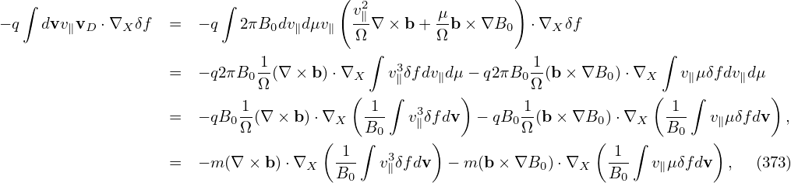
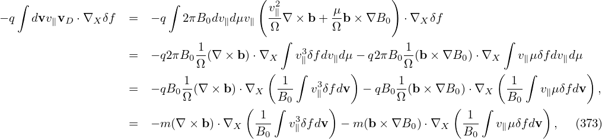
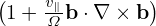
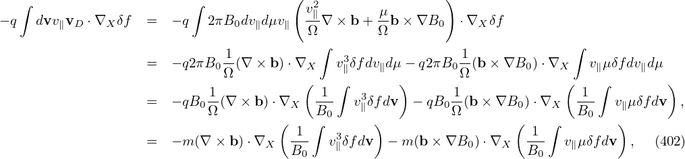
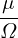
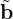

Electromagnetic perturbations of frequency lower than the ion cyclotron frequency are widely believed to be more important than high-frequency ones in transporting plasma in tokamaks. (This assumption can be verified numerically when we are able to do a full simulation including both low-frequency and high-frequency perturbations. This kind of verification is not possible at present due to computation costs.)
If we assume that only low-frequency perturbations are present, the Vlasov equation can be simplified. Specifically, symmetry of the particle distribution function in the phase space can be established if we choose suitable phase-space coordinates and split the distribution function in a proper way. The symmetry is along the so-called gyro-angle α in the guiding-center coordinates (X,μ,𝜀,α). In obtaining the equation for the gyro-angle independent part of the distribution function, we need to average the equation over the gyro-angle α and thus this model is called “gyrokinetic”.
In deriving the gyrokinetic equation, the perturbed electromagnetic field is assumed to be known and of low-frequency. To do a kinetic simulation, we need to solve the field equation to obtain the perturbed electromagnetic field. It is still possible that high frequency modes (e.g., compressional Alfven waves and ΩH modes) appear in a gyrokinetic simulation. If the amplitude of high frequency modes is large, then the simulation is invalid since the gyrokinetic model is invalid in this case.
Our starting point is the Vlasov equation in terms of particle coordinates (x,v):
|
| (1) |
where f = f(t,x,v) is the particle distribution function, x and v are the location and velocity of particles. The distribution function f depends on 6 phase-space variables (x,v), besides the time t.
Choose Cartesian coordinates (x,y,z) for the configuration space x. Consider a simple case where the
electromagnetic field is a time-independent field given by B = B0(x,y,z) and E = 0. Let us examine
the Vlasov equation in this case and see whether there is any coordinate system that can simplify the
Vlasov equation.
and E = 0. Let us examine
the Vlasov equation in this case and see whether there is any coordinate system that can simplify the
Vlasov equation.
Describe the velocity space using a right-handed cylindrical coordinates (v⊥,α,v∥), where v∥ = v ⋅ e∥, e∥ = ez is the unit vector along the magnetic field, α is the azimuthal angle of the perpendicular velocity (v⊥ = v − v∥ez) relative to ex. Note that these coordinates are defined relative to the local magnetic field, which, in more general cases, may vary in space.
Next, let us express the spatial gradient of f in terms of partial derivatives:
Note that this gradient is taken by holding v constant (i.e., (vx,vy,vz) constant rather than (v⊥,α,v∥) constant). So, we need do the following coordinate transform:
 | (3) |
Using chain rule, expression (2) is written as

 | (6) |
are generally nonzero since the defintion of (v⊥,α,v∥) depends on the local magnetic field direction. In our simple case, they are zero since the magnetic field direction is uniform. Similarly, we obtain
 | (7) |
 | (8) |
Then, in (x′,y′,z′,v⊥,α,v∥) coordinates, the spatial gradient of f is written as
 | (9) |
Next, consider the gradient in velocity space
where e1 = v⊥∕|v⊥|, v⊥ = v − (v ⋅ez)ez, and eα = ez ×e1. Using Eq. (10), (v ×B) ⋅
(v ×B) ⋅ is written as
is written as

 | (12) |
i.e.,
 | (13) |
Define the following coordinates transform (guiding-center transform):
 | (14) |
Next, we express the partial derivatives of f appearing in Eq. (13) in terms of the guiding-center coordinates. Using the chain rule, we obtain

 | (16) |
and


 | (19) |
Using the above results, equation (13) in the guiding-center coordinates is written as
 | (20) |
Here we find some terms cancel each other, giving
 | (21) |
Equation (21) is the equation for f in the guiding-center coordinates (X,Y,Z,v⊥′,α′,v∥′).
Define gyro-phase averaging operator
 | (22) |
Then averaging Eq. (21) over α′, we get
 | (23) |
As is assumed above, Ω is approximately independent of α′ and thus Ω in Eq. (23) can be moved outside of the gyro-angle integration, giving
 | (24) |
Peforming the integration, we get
![∂⟨f⟩ ′∂⟨f⟩ − 1 ′ ′
∂t′ + v∥ ∂Z − Ω (2π) [f(α = 2π)− f (α = 0)] = 0.](nonlinear_gyrokinetic_equation26x.png) | (25) |
Since α′ = 2π and α′ = 0 correspond to the same phase space location, the corresponding values of the distribution function must be equal. Then the above equation reduces to
 | (26) |
which is an equation for the gyro-angle independent part of the distribution function.
Next let us investigate whether the guiding-center transform can be made use of to simplify the kinetic equation for more general cases where we have a (weakly) non-uniform static magnetic field, plus electromagnetic perturbations of low frequency (and of small amplitude and k∥ρi ≪ 1). And we will include the effect that B0 depends on α′, i.e., grad-B and curvature drift.
Next, we define the guiding-center transform and then transform the Vlasov equation from the particle coordinates (x,v) to the guiding-center coordinates, i.e., express the gradient operators ∂∕∂x and ∂∕∂v in terms of the guiding-center coordinates.
In a magnetic field, given a particle location and velocity (x,v), we know how to calculate its guiding-center location X, i.e.,
 | (27) |
where e∥ = B0∕B0, Ω = qB0∕m, B0 = B0(x) is the equilibrium (macroscopic) magnetic field at the particle position. We will consider Eq. (27) as a transform and call it guiding-center transform[1]. Note that the transform (27) involves both position and velocity of particles.
Given (x,v), it is straightforward to obtain X by using Eq. (27). On the other hand, the inverse transform (i.e., given (X,v), to find x) is in principle not easy because Ω and e∥ depend on x, which usually requires solving a nonlinear equation for its root. Numerically, one can use
 | (28) |
as an iteration scheme to compute x, with the initial guess chosen as x0 = X. If we stop at the first iteration, then
 | (29) |
In gyrokinetic PIC simulation, Eq. (29) is used as the inverse guiding-center transformation. This transformation needs to be performed numerically when we deposit markers to grids, or when we calculate the gyro-averaged field to be used in pushing guiding-centers.
[The equilibrium magnetic field we will consider has spatial scale length much larger than the thermal gyro radius ρ. In this case the difference between the values of e∥(x)∕Ω(x) and e∥(X)∕Ω(X) is negligible. The difference between equilibrium field values evaluated at X and x is usually neglected in gyrokinetic theory (except in deriving the gradient/curvature drift). Therefore it does not matter whether the above e∥∕Ω is evaluated at x or X. What matters is where the perturbed fields are evaluated: at x or at X. The values of perturbed fields at x or at X are different and this is called the finite Larmor radius (FLR) effect.]
For later use, define ρ ≡−v × e∥∕Ω, which is the vector gyro-radius pointing from the the guiding-center to the particle position.
The guiding-center transformations (27) and (29) involve the particle velocity v. It is the cross product between v and e∥(x) or e∥(X) that is actually used. Therefore, only the perpendicular velocity (which is defined by v⊥ = v − v ⋅ e∥) enters the transform. A natural choice of coordinates for the perpendicular velocity is (v⊥,α), where v⊥ = |v⊥| and α is the azimuthal angle of the perpendicular velocity in the local perpendicular plane.
The parallel direction is fully determined by B0(x), but there are degrees of freedom in choosing one of the two perpendicular basis vectors. In order to make the azimuthal angle α fully defined, we need to choose a way to define one of the two perpendicular directions. In GEM simulations, one of the perpendicular direction is chosen as the direction perpendicular to the magnetic surface, which is fully determined at each spatial point. (We need to define the perpendicular direction at each spatial location to make ∂α∕∂x|v defined, which is needed in the Vlasov differential operators. However, it seems that terms related to ∂α∕∂x|v are finally dropped due to that they are of higher order**check.)
In the following, α will be called the “gyro-angle” . [Note that, in the guiding-center coordinates (X,v∥,v⊥,α), α is a velocity coordinate rather than a spatial coordinate. When transformed back to particle coordinates, α affects both the velocity coordinate and the spatial coordinate. Consider a series of points in terms of guiding-center coordinates (X,v∥,v⊥,α) with (X,v∥,v⊥) fixed but with α changing. Using the inverse guiding-center transform (29), we know that the above points form a gyro-ring in space, i.e., α influences spatial location, in addtion to velocity.]
The gyro-angle is an important variable we will stick to because we need to directly perform averaging over this variable (with X fixed) in deriving the gyrokinetic equation. We have multiple options for the remaining velocity coordinates , such as (v,v∥), or (v,v⊥), or (v∥,v⊥). In Frieman-Chen’s paper, the velocity coordinates other than α are chosen to be (𝜀,μ) defined by
 | (30) |
and
 | (31) |
where Φ0(x) is the equilibrium (macroscopic) electrical potential. Choosing μ as one of the phase space coordinates is nontrivial because it turns out a constant of motion. And this choice seems to be important in sucessfully getting the final gyrokinetic equation (I need to check this).
Note that (𝜀,μ,α) is not sufficient in uniquely determining a velocity vector. An additional parameter σ = sign(v∥) is needed to determine the sign of v∥ = v ⋅e∥. In the following, the dependence of the distribution function on σ is often not explicitly shown in the variable list (i.e., σ is hidden/suppressed), which, however, does not mean that the distribution function is independent of σ.
Another frequently used velocity coordinates are (μ,v∥,α). In the following, I will derive the gyrokinetic equation in (𝜀,μ,α) coordinates. After that, I transform it to (μ,v∥,α) coordinates.
One important thing to note about the above velocity coordinates is that they are defined relative to the local magnetic field. If the field itself is spatially varying (such as in tokamaks), the above velocity coordinates are also spatially varying for a fixed velocity v. Specifically, the following derivatives are nonzero:
 | (32) |
The transform from particle variables (x,v) to guiding-center variables (X,𝜀,μ,α,σ) is given by
 | (33) |
As mentioned above, the dependence of the distribution function on σ will not be explicitly indicated in the following.
Denote the particle distribution function expressed in particle coordinates (x,v) by fp, and the same distribution expressed in the guiding-center variables (X,𝜀,μ,α) by fg. Then
 | (34) |
where (x,v) and (X,𝜀,μ,α) are related to each other by the guiding-center transform (29). Equation (34) along the guiding-center transform can be considered as the definition of fg.
As is conventionally adopted in multi-variables calculus, both fp and fg are often denoted by the same symbol, say f. Which set of independent variables are actually assumed is inferred from the context. This is one subtle thing for gyrokinetic theory in particular and for multi-variables calculus in general. (Sometimes, it may be better to use subscript notation on f to identify which coordinates are assumed. One example where this distinguishing is important is encountered when we try to express the diamagnetic flow in terms of fg, which is discussed in Appendix G.)
In practice, fg is often called the guiding-center distribution function whereas fp is called the particle distribution function. However, they are actually the same distribution function expressed in different variables. The name “guiding-center distribution function” is misleading because it may imply that we can count the number of guiding-centers to obtain this distribution function but this implication is wrong.
Using the chain-rule, the spatial gradient ∂fp∕∂x is written
 | (35) |
From the definition of X, Eq. (27), we obtain
 | (36) |
where I is the unit dyad. From the definition of 𝜀, we obtain
 | (37) |
where E0 = −∂Φ0∕∂x. Using the above results, equation (35) is written as
![∂f ∂f [ ∂ (e ) ] ∂f q ∂f ∂μ ∂f ∂α∂f
--p |v = --g+ v × --- -∥ ⋅--g − --E0--g + -----g+ ----g .
∂x ∂X ∂x Ω ∂X m ∂𝜀 ∂x ∂μ ∂x ∂α](nonlinear_gyrokinetic_equation39x.png) | (38) |
As mentioned above, the partial derivative ∂∕∂x is taken by holding v constant. Since B0 is
spatially varying, v⊥ is spatially varying when holding v constant. Therefore  and
and  are
generally nonzero. The explicit expressions of these two derivatives are needed later in the
derivation of the gyrokinetic equation and is discussed in Appendix J. For notation ease,
define
are
generally nonzero. The explicit expressions of these two derivatives are needed later in the
derivation of the gyrokinetic equation and is discussed in Appendix J. For notation ease,
define
![[ (e ) ]
λB1 = v × -∂- -∥ ⋅-∂-,
∂x Ω ∂X](nonlinear_gyrokinetic_equation42x.png) | (39) |
and
 | (40) |
then expression (38) is written as
![∂fp|v = ∂fg + [λB1 + λB2]fg −-qE0 ∂fg.
∂x ∂X m ∂𝜀](nonlinear_gyrokinetic_equation44x.png) | (41) |
Note that ∂∕∂X is a shorthand for
 |𝜀,μ,α |𝜀,μ,α
|
i.e., it is taken by holding (𝜀,μ,α) constant (rather than holding v constant). For notation ease, ∂∕∂X is sometimes denoted by ∇X or simply ∇.
Next, let us express the velocity gradient ∂f∕∂v in terms of the guiding-center variables. Using the chain rule, ∂f∕∂v is written
 | (42) |
From the definition of X, we obtain

 | (44) |
From the definition of μ, we obtain
 | (45) |
From the definition of α, we obtain
 | (46) |
where eα is defined by
 | (47) |
Using the above results, expression (42) is written
 | (48) |
In terms of the guiding-center variables, the time partial derivative ∂fp∕∂t appearing in Vlasov equation is written as
 | (49) |
where V = (𝜀,μ,α). Here ∂X∕∂t and ∂V∕∂t are not necessarily zero because the equilibrium quantities involved in the definition of the guiding-center transformation are in general time dependent. This time dependence is assumed to be very slow in the gyrokinetic ordering discussed later. In the following, ∂X∕∂t and ∂V∕∂t will be dropped, i.e.,
 | (50) |
Using the above results, the Vlasov equation in guiding-center coordinates is written
Using tensor identity a ⋅ I × b = a × b, equation (51) is written as This is the Vlasov equation in guiding-center coordinates.
Since the definition of the guiding-center variables (X,𝜀,μ,α) involves the equilibrium fields B0 and E0, to further simplify Eq. (52), we need to separate electromagnetic field into equilibrium and perturbation parts. Writing the electromagnetic field as
 | (53) |
and
 | (54) |
then substituting these expressions into equation (52) and moving all terms involving the field perturbations to the right-hand side, we obtain
where δR is defined by Next, let us simplify the left-hand side of Eq. (55). Note that Note that
 | (58) |
where vE0 is defined by vE0 = cE0 × e∥∕B0, which is the E0 × B0 drift. Further note that
which can be combined with v ⋅ ∂fg∕∂X term, yielding v∥e∥⋅ ∂fg∕∂X.Using Eqs. (58), (59), and (57), the left-hand side of equation (55) is written as
where Lg is often called the unperturbed Vlasov propagator in guiding-center coordinates (X,𝜀,μ,α).[Equation (60), corresponds to Eq. (7) in Frieman-Chen’s paper[3]. In Frieman-Chen’s equation (7), there is a term
 (Emac − E0) ⋅ v (Emac − E0) ⋅ v
|
where Emac is a given macroscopic electric field introduced when defining the guiding-center transformation. In my derivation Emac is chosen to be equal to the equilibrium electric field, and thus the above term is zero.]
Using the above results, Eq. (55) is written as
 | (61) |
i.e.
It is instructive to consider some special cases of the above complicated equation. Consider the case that the equilibrium magnetic field B0 is uniform and time-independent, E0 = 0, and the electrostatic limit δB = 0, then equation (62) is simplified as
 | (65) |
which agrees with Eq. (21) discussed in Sec. 1.2.
Expand the distribution function fg as
 | (66) |
where Fg is assumed to be an equilibrium distribution function, i.e.,
 | (67) |
Using Eqs. (66) and (67) in Eq. (61), we obtain an equation for δFg:
 | (68) |
To facilitate the simplification of the Vlasov equation in the low-frequency regime, we assume the following orderings (some of which are roughly based on experiment measure of fluctuations responsible for tokamak plasma transport, some of which can be invalid in some interesting cases.) These ordering are often called the standard gyrokinetic orderings.
Define the spatial scale length L0 of equilibrium quantities by L0 ≈ Fg∕|∇XFg|. Assume that L0 is
much larger than the thermal gyro-radius ρi ≡ vt∕Ω, i.e., λ ≡ ρi∕L0 is a small parameter, where
vt =  is the thermal velocity. That is
is the thermal velocity. That is
 | (69) |
and
 | (70) |
The equilibrium E0 × B0 flow, i.e.,
 | (71) |
is assumed to be weak with
 | (72) |
We assume that the amplitudes of perturbations are small. Specifically, we assume
 | (73) |
where δΦ is the perturbed scalar potential defined later in Eq. (79).
We consider low frequency perturbations with ω∕Ω ∼ O(λ1), then
 | (74) |
The perturbation is assumed to have a long wavelength (much longer than ρi) in the parallel direction
 | (75) |
and have a short wavelength comparable to the thermal gyro-radius in the perpendicular direction
 | (76) |
[Combining Eq. (75) and (76), we obtain
 | (77) |
i.e., the parallel wave number is one order smaller than the perpendicular wave-number.]
In terms of the scalar and vector potentials δΦ and δA, the perturbed electromagnetic field is written as
 | (78) |
and
 | (79) |
Then
 | (80) |
 | (81) |
Using the above orderings, it is ready see that δE∥ is one order smaller than δE⊥, i.e.,
 | (82) |
Most gyrokinetic simulations approximate the vector potential as δA ≈ δA∥e∥.
 | (83) |
We will assume vtδA∥∼ δΦ.
The evolution of the macroscopic quantity Fg is governed by Eq. (67), i.e.,
 | (84) |
where the left-hand side is written as
![∂Fg ∂X ∂Fg ∂V ∂Fg
LgFg = -∂t-+ -∂t ⋅∂X--+ ∂t-⋅-∂V-
∂Fg ∂Fg
+ (v∥e∥ + VE0)⋅ ∂X-+ v ⋅[(λB1 + λB2)Fg]− Ω ∂α--
q (v ∂F e ∂F )
+ --E0 ⋅ -⊥----g+ -α---g-
m B0 ∂μ v⊥ ∂α](nonlinear_gyrokinetic_equation91x.png)
 | (85) |
i.e., Fg0 is independent of the gyro-angle α. The balance on O(λ1) gives
 | (86) |
Performing averaging over α, ∫ 02π(…)dα, on the above equation and noting that Fg0 is independent of α, we obtain
 | (87) |
Note that a quantity A = A(x) that is independent of v will depend on v when transformed to
guiding-center coordinates, i.e., A(x) = Ag(X,v). Therefore Ag depends on gyro-angle α. However,
since ρi∕L ≪ 1 for equilibrium quantities, the gyro-angle dependence of the equilibrium quantities can
be neglected. Specifically, e∥, B0 and Ω can be considered to be independent of α. As to v∥, we have
v∥ = ± . Since B0 is considered independent of α, so does v∥. Using these results, equation
(87) is written
. Since B0 is considered independent of α, so does v∥. Using these results, equation
(87) is written
 | (88) |
Using E0 = −∇Φ0, the above equation is written as
 | (89) |
Note that
 | (90) |
where the error is of O(λ2)Φ0, and thus, accurate to O(λ), the last term of equation (89) is zero. Then equation (89) is written as
 | (91) |
which implies that Fg0 is constant along a magnetic field line.
Using Fg ≈ Fg0, equation (68) is written as
 | (92) |
where δRδFg is a nonlinear term which is of order O(λ2) or higher, LgδFg and δRFg0 are linear terms which are of order O(λ1) or higher. The linear term δRFg0 is given by
 | (93) |
In obtaining (93), use has been made of ∂Fg0∕∂α = 0. Another linear term LgδFg is written as
where Ω∂δFg∕∂α is of order O(λ1) and all the other terms are of order O(λ2).Next, to reduce the complexity of algebra, we consider the easier case in which ∂Fg0∕∂μ = 0.
The balance between the leading terms (terms of O(λ)) in Eq. (92) requires that
 | (95) |
where δFa is a unknown distribution function to be solved from the above equation. It is ready to verify that
 | (96) |
is a solution to the above equation, accurate to O(λ). [Proof: Substitute expression (96) into the left-hand side of Eq. (95), we obtain
Using![[ ]
∂x- ∂-- e∥(X-)-
∂α = ∂α − v × Ω(X )
∂ e (X )
= --[− v]×-∥----
∂αv Ω(X )
= − -⊥- (98)
Ω](nonlinear_gyrokinetic_equation106x.png)
As is discussed above, the terms of O(λ) can be eliminated by splitting a so-called adiabatic term form δFg. Specifically, write δFg as
 | (101) |
where δFa is given by (96), i.e.,
 | (102) |
which depends on the gyro-angle via δΦ and this term is often called adiabatic term. Plugging expression (101) into equation (92), we obtain
 | (103) |
Next, let us simplify the linear term on the right-hand side, i.e, δRFg0 −LgfδFa, (which should be of O(λ2) or higher because Ω∂δFa∕∂α cancels all the O(λ1) terms in δRFg0).
LgδFa is written
where the error is of order O(λ3). In obtaining the above expression, use has been made of e∥⋅∂Fg0∕∂X = 0, ∂Fg0∕∂X = O(λ1)Fg0, ∂Fg0∕∂α = 0, ∂Fg0∕∂μ = 0, and the definition of λB1 and λB2 given in expressions (39) and (40). The expression (104) involves δΦ operated by the Vlasov propagator Lg. Since δΦ takes the most simple form when expressed in particle coordinates (if in guiding-center coordinates, δΦ(x) = δΦ(X−v ×e∥∕Ω), which depends on velocity coordinates and thus more complicated), it is convenient to use the Vlasov propagator Lg expressed in particle coordinates. Transforming Lg back to the particle coordinates, expression (104) is written![[ ]
LgδFa = q-∂Fg0 ∂δΦ|x,v + v⋅∇x δΦ+ -q(E0 + v× B0 )⋅ ∂Φ-|x
m ∂𝜀 [ ∂t ] m ∂v
q-∂Fg0 ∂δΦ-
= m ∂𝜀 ∂t |x,v + v⋅∇x δΦ (105)
q ∂Fg0[ ∂δΦ ( ∂δA )]
= m--∂𝜀- ∂t-|x,v + v⋅ − δE − -∂t-|x,v
[ ]
= q-∂Fg0 ∂δΦ|x,v − v⋅δE − ∂v-⋅δA|x,v . (106)
m ∂𝜀 [ ∂t ∂t]
q-∂Fg0 ∂δΦ- ∂v-⋅δA-
= m ∂𝜀 ∂t − v⋅δE − ∂t . (107)](nonlinear_gyrokinetic_equation112x.png)
The consequence of this is that, as we will see in Sec. 3.6, δG is independent of the gyro-angle, accurate to order O(λ1). Therefore, separating δF into adiabatic and non-adiabatic parts also corresponds to separating δF into gyro-angle dependent and gyro-angle independent parts.
Let us rewrite the linear term (108) in terms of δΦ and δA. The δE + v ×δB term in expression (108) is written as
 | (109) |
Note that this term needs to be accurate to only O(λ). Then
 | (110) |
where the error is of O(λ2). Using the vector identity v ×∇x ×δA = (∇δA) ⋅v − (v ⋅∇)δA and noting v is constant for ∇x operator, the above equation is written
 | (111) |
Note that Eq. (41) indicates that ∇xδΦ ≈∇XδΦ, where the error is of O(λ2), then the above equation is written
 | (112) |
Further note that the parallel gradients in the above equation are of O(λ2) and thus can be dropped. Then expression (112) is written
where δL is defined by
 | (114) |
Using expression (113), equation (108) is written
![q [ e ] ∂F q∂δL ∂F
δRF0 − LgδFa = − -- (− ∇X ⊥δL − v⊥ ⋅∇X ⊥δA) ×-∥ ⋅---g0− --------g0,
m Ω ∂X m ∂t ∂𝜀](nonlinear_gyrokinetic_equation120x.png) | (115) |
where all terms are of O(λ2).
Plugging expression (115) into Eq. (103), we obtain
![[ ]
LgδG = − q- (− ∇X ⊥ δL− v⊥ ⋅∇X ⊥δA )× e∥ ⋅ ∂Fg0− q-∂δL∂Fg0 + δRδFg,
m Ω ∂X m ∂t ∂ 𝜀](nonlinear_gyrokinetic_equation121x.png) | (116) |
where Lg is given by Eq. (94), i.e.,
![Lg = -∂ + (v∥e∥ + VE0 )⋅-∂ + v⋅[λB1 + λB2 ]− Ω-∂
∂t ( ∂X ) ∂ α
+ -qE0 ⋅ v-⊥-∂-+ eα--∂- , (117)
m B0 ∂μ v⊥ ∂α](nonlinear_gyrokinetic_equation122x.png)
Expand δG as
| δG = δG0 + δG1 + …, |
where δGi ∼ O(λi+1)Fg0, and note that the right-hand side of Eq. (116) is of O(λ2), then, the balance on order O(λ1) requires
 | (118) |
i.e., δG0 is gyro-phase independent.
The balance on order O(λ2) requires (for the special case of E0 = 0):
Define the gyro-average operator ⟨…⟩α by
 | (120) |
where h = h(X,α,𝜀,μ) is an arbitrary function of guiding-center variables. The gyro-averaging is an integration in the velocity space. [For a field quantity, which is independent of the velocity in particle coordinates, i.e., h = h(x), it is ready to see that the above averaging is a spatial averaging over a gyro-ring.]
Gyro-averaging Eq. (119), we obtain
where use has been made of ⟨(v⊥⋅∇X)δA⟩α ≈ 0, where the error is of order higher than O(λ2). Note that v∥ = ± . Since B0 is approximately independent of α, so
does v∥. Using this, the first gyro-averaging on the left-hand side of the above equation is
written
. Since B0 is approximately independent of α, so
does v∥. Using this, the first gyro-averaging on the left-hand side of the above equation is
written
 | (122) |
The second gyro-averaging on the left-hand side of Eq. (121) can be written as
![⟨v ⋅[λB1 + λB2]δG0⟩α = VD ⋅∇X δG0,](nonlinear_gyrokinetic_equation129x.png) | (123) |
where VD is the magnetic curvature and gradient drift (Eq. (123) is derived in Appendix xx, to do later). Then Eq. (121) is written
Next, we try to simplify the nonlinear term ⟨δRδFg⟩α appearing in Eq. (124), which is written as


 | (127) |
Accurate to O(λ2),the first term on the right-hand side of the above is zero. [Proof:

 | (129) |
Using the expression of δR given by Eq. (56), the above expression is written as
where use has been made of ∂δG0∕∂α = 0. Using Eq. (113), we obtain
 | (131) |
The other two terms in Eq. (130) can be proved to be zero. [Proof:


![-q[ e∥]
⟨δRδG0 ⟩α = m ∇X ⊥⟨δL⟩α × Ω ⋅∇X δG0.](nonlinear_gyrokinetic_equation140x.png) | (134) |
Using this in Eq. (129), we obtain
![[ ]
⟨δRδFg⟩α = q- ∇X ⊥⟨δL⟩α × e∥ ⋅∇X δG0,
m Ω](nonlinear_gyrokinetic_equation141x.png) | (135) |
which is of O(λ2).
Using the above results, the gyro-averaged kinetic equation for δG0 is finally written as
where VD is the equilibrium guiding-center drift velocity, ⟨…⟩ is the gyro-phase averaging operator, δL = δΦ− v ⋅δA, and δG0 = δG0(X,𝜀,μ,t) is gyro-angle independent and is related to the perturbed distribution function δFg by
 | (137) |
where the first term is called “adiabatic term”, which depends on the gyro-phase α via δΦ. Equation (136) is the special case (∂Fg0∕∂μ|𝜀 = 0) of the Frieman-Chen nonlinear gyrokinetic equation given in Ref. [3]. Note that the nonlinear terms only appear on the left-hand side of Eq. (136) and all the terms on the right-hand side are linear. The term
 | (138) |
consists of the δE × B0 drift and magnetic fluttering term (refer to expression (330) in Sec. C.3). For notaiton ease, this term is denoted by δVD in the following:
 | (139) |
Note that ∇≡ ∂∕∂X, which is taken in the guiding-center coordinates (X,𝜀,μ,α) while holding (𝜀,μ,α) constant. How do we numerically calculate ∂Φg∕∂X in PIC simulations? The difficulty is that X grid is not available, which makes it difficult to use the finite difference method. We note x grid is available in PIC simulations. It turns out we can make use of x grid to approximatly calculate the derivatives in X space. Using x = X + ρ and the definition δΦg(X,α,v⊥) = δΦp(x) we obtain

Similarly, we have ∂δA∥g∕∂X ≈ ∂δA∥p∕∂x.
Also note that ⟨δΦg⟩ is not known on X grid (it is known on random markers). So, to calculate ∂⟨δΦg⟩∕∂X, we need to exchange the operation order:
 | (141) |
For notation ease, the subscripts g and p are usually dropped. Which one is intended should be obvious from the context.
The gyrokinetic equation (136) contains time derivatives on the right-hand side, which is problematic if treated by using explicit finite difference in PIC simulations. Next, we discuss some methods that can eliminate these terms, making the gyrokinetic equation more amenable to PIC simulations.
Note that the coefficient before ∂F0∕∂𝜀 in Eq. (136) involves the time derivative of ⟨δϕ⟩α, which is problematic if treated by using explicit finite difference (I test the algorithm that treats this term by implicit scheme, the result roughly agrees with the standard method discussed in Sec. 6). It turns out that ∂⟨δΦ⟩α∕∂t can be eliminated by defining another gyro-phase independent function δf by
 | (142) |
Substituting this into Eq. (136), we obtain the equation for δf:
![[ ∂ ]
∂t + (v∥e∥ + VD + δVD )⋅∇X δf
[ ]
− -q∂F0- -∂ + (v∥e∥ + VD + δVD )⋅∇X ⟨δΦ⟩
m ∂𝜀 [∂t ]
− -q⟨δΦ⟩ -∂ + (v e + V + δV )⋅∇ ∂F0-
m ∂t ∥ ∥ D D X ∂𝜀
q ∂⟨δL⟩∂F0
= − δVD ⋅∇XF0 − m---∂t--∂𝜀-. (143)](nonlinear_gyrokinetic_equation149x.png)
Using
δVD = − ∇⟨δΦ − v ⋅ δA⟩× ∇⟨δΦ − v ⋅ δA⟩×
|
in the right-hand side of Eq. (144) yields
[Equation (145) corresponds to Eqs. (A8-A9) in Yang Chen’s paper[2], where the first minus on the right-hand side of Eq. (A8) is wrong and should be replaced with q∕m; one q is missing before ∂⟨v ⋅ δA⟩∕∂t in Eq. (A9).]
Similar to the method of eliminating ∂⟨δϕ⟩∕∂t, we define another gyro-phase independent function by
 | (146) |
Most gyrokinetic simulations approximate the vector potential as δA ≈ δA∥e∥. Let us simplify Eq. (144) for this case. Then ⟨v ⋅ δA⟩α is written as
 | (147) |
Then expression (146) is written as
 | (148) |
Then Eq. (144) is written in terms of δh as
![[ ∂ ]
∂t + (v∥e∥ + VD + δVD )⋅∇X δh
q∂F [ ∂ ]
+-----0 -- + (v∥e∥ +VD + δVD )⋅∇X ⟨v∥δA∥⟩
m ∂𝜀 ∂t ( )
+-q⟨v∥δA∥⟩[(VD + δVD )⋅∇X ] ∂F0-
m ∂ 𝜀
= − δVD ⋅∇XF0
q[ ∂⟨v∥δA∥⟩ ] ∂F0
−m- − ---∂t---− (v∥e∥ + VD +δVD ) ⋅∇X ⟨δΦ ⟩ ∂-𝜀 , (149)](nonlinear_gyrokinetic_equation157x.png)
 | (152) |
where B0(x) = B0(X + ρ) with ρ = ρ(X,𝜀,μ,α). Since the scale length of B0 is much larger than the thermal Larmor radius, B0(x) ≈ B0(X) and hence v∥ can be approximated as a constant when gyro-angle α changes. Then v∥ can be taken out of the gyro-averaging in expression (147), yielding
 | (153) |
Using this, the term related to δA∥ in (151) can be further written as


Define δf(h) by
 | (157) |
where δA∥(h) is a part of δA∥:
 | (158) |
with δA∥(s) determined by an evolution equation:
 | (159) |
Begining with Eq. (144) and following the same procedure in Sec. 4.2, we obtain the following evoluation equation for δf(h):
In terms of δA∥(h), the parallel Ampere’s law is written as
 | (161) |
where δJ||j(h) is the parallel current carried by the distrbution funciton δfj(h), where the subscript j is species index. Here δA∥(s) has been moved to the right-hand side since its value is already known when we solve the Ampere’s law for δA∥(h).
Compared with the p∥ formulation, the improvement of the above procedure is that a part of δA∥ is solved from an evolution equation (which is chosen by some physical consideration) and the remainder is solved from the Ampere’s law. We hope that A∥(s) is the dominant part of δA∥ so that the remainder solved from the Ampere’s law is small and hence the cancellation problem (of the Ampere’s law) become less significant. While a clever choice of the evolution equation for δA∥(s) may help ensure that δA∥(s) remain dominant over the entire simulation duration, we have another simple way to make δA∥(s) remain dominant: collect both δA∥(s) and δA∥(h) into δA∥(s) at the end of each time step:
 | (162) |
Then, to make δA∥ untouched (so that electromagnetic field remain unchanged), we set δA∥(h) to zero:
 | (163) |
Here “old” and “new” refers to before and after the re-spliting, respectively. Note that this re-spliting is
made at the end of each time step and does not correspond to any time evolution. This
re-splitting keeps the value of δA∥ untouched and hence does not influence the electromagnetic
field. Meanwhile, the definition of Eq. (157) indicates that, for a given δf, the re-splitting
will make the value of δf(h) increase by Δ =  ⟨v∥δA∥old(h)⟩
α
⟨v∥δA∥old(h)⟩
α since δA(h) is reduced
by δAold(h). To keep δf unchanged, which is what we need to ensure, we must add Δ to
δf(h):
since δA(h) is reduced
by δAold(h). To keep δf unchanged, which is what we need to ensure, we must add Δ to
δf(h):
 | (164) |
After the operations in (162) (163) and (164), both the electromagnetic field and the distribution function δf remain unchanged. Therefore we do not change any physical state of the system. Hence the above operations can only have effects on numerical round-off errors. As mentioned above, we hope the numerical effects will reduce the cancellation errors.
Next, consider the special case that F0 is a local Maxwellian given by
![( m )3∕2 [ m 𝜀 ]
F0(X,𝜀) = n0(X ) 2πT-(X-)- exp − T-(X)- ,
0 0](nonlinear_gyrokinetic_equation175x.png) | (165) |
Then ∂F0∕∂𝜀 and ∇XF0 are written as
 | (166) |
and
where κn = − , and κT = −
, and κT = − . Consider the case that F0(X,𝜀) is independent of 𝜃 and α, then
κn and κTare written as κn = κn∇r and κT = κT∇r, where κn ≡−
. Consider the case that F0(X,𝜀) is independent of 𝜃 and α, then
κn and κTare written as κn = κn∇r and κT = κT∇r, where κn ≡−
 , κT ≡−
, κT ≡−
 , and r is
chosen to be the minor radius one the low field side.
, and r is
chosen to be the minor radius one the low field side.
Using the above results, Eq. (160) is written as
The weight of the j th marker is defined by
 | (169) |
where V pj0 is the phase space volume occupied by the jth marker. Multiplying both sides of Eq. (168) by V pj0, and noting that d(V pj0)∕dt = 0, we obtain
where use has been made of ∇⟨δΦ⟩ = ⟨∇δΦ⟩ and ∇⟨δA∥(h)⟩ = ⟨∇δA∥(h)⟩.In field-aligned coordinates (x,y,z),  can be written as
can be written as
 | (171) |
Note that the direction of ∂r∕∂x at 𝜃 = −π is different from that of ∂r∕∂x at 𝜃 = +π. This implies that ∂δΦ∕∂x is a non-periodic function of 𝜃. Similarly, ∇y is also a non-perioidic functon of 𝜃. Then both ∂δΦ∕∂x and ∇y are discontinuous across the 𝜃 cut (𝜃 = ±π).
The gyro-average of expression (171) is written as
 | (172) |
where we approximate ∇x, ∇y, and ∇z as constants when performing the gyro-averge since they are determined by the equilibrim magnetic field, which is nearly constant on the Larmor radius scale. As is mentioned above, ∇y is not continuous at the 𝜃 cut. Do we need to worry about this? We do not. This is because we must stick to the same branch when we perform gryo-average on it, and hence ∇y is always continous. Then, do we need to worry about the disconunity of ∂δΦ∕∂x across the 𝜃 cut when performing the gyro-averge on it? We do not either. The reason is the same: we must stick to a single branch. The disconunity is just irrelevant here. The discontinuity only manifest itself when we need to infer value on 𝜃 = −π from that on 𝜃 = +π (vice versa), i.e., when across branch communication is explicitly needed. In TEK, the field equations are not solved at 𝜃 = +π and hence the field values are not directly obtained. Instead, the field values at 𝜃 = +π are infered from the field values at 𝜃 = −π using the coninuity of ∇δΦ. At the 𝜃 cut, the continuity of ∇δΦ requires
 | (173) |
where the superscript “+” and “−” refer to the location 𝜃 = +π and 𝜃 = −π, respectively. Dotting the above by ∇x, we obtain
 | (174) |
which is used in TEK to infer the value of ⟨ ⟩+ from that of ⟨
⟩+ from that of ⟨ ⟩−.
⟩−.
Similarly, for ∂δA∥(h)∕∂x, we obtain:
 | (175) |
 | (176) |
Using these, Eq. (170) is written as
![dwj dr [ (mv2 3) ]
-dt-= δVD ⋅∇ ψdψ- κn + 2T0-− 2 κT Vpj0F0
[ ′ ′ ′ ]
− q- ⟨∂δΦ⟩dX--⋅∇x + ⟨∂δΦ-⟩dX--⋅∇y + ⟨∂δΦ-⟩dX--⋅∇z Vpj0F0
T ∂(x dt ∂y dt ∂z dt )
q ∂δA (h∥) dX ∂ δA (∥h) dX ∂ δA (h∥) dX
+ --v∥(⟨------⟩--- ⋅∇x +⟨------⟩--- ⋅∇y +⟨------⟩--- ⋅∇z) Vpj0F0
T ∂x dt ∂y dt ∂z dt
q- (h)
− T ⟨δA ∥ ⟩(μb ⋅∇B0 )Vpj0F0, (177)](nonlinear_gyrokinetic_equation196x.png)
 ≡ v∥b + VD + δVD and
≡ v∥b + VD + δVD and  ≡ VD + δVD. Define
≡ VD + δVD. Define
 | (178) |
Then, a typical term of the above is written as


 is the normlizing factor needed when coding. The mirror force term:
is the normlizing factor needed when coding. The mirror force term: 

 is the normlizing factor needed when coding.
is the normlizing factor needed when coding.
The pullback:


Using
 | (183) |
i.e.,
 | (184) |
To get the normalizing factor, consider only the contribution from E ×B drift. Then a typical term is written as

The magnetic fluttering term is written as


Also to get the normalizing factor needed in the code, consider a typical term:

where Tu∕(quvuBnLn) is the normlizing factor I need when coding.
The basic terms involved in the above expressions can be written as
 | (190) |
 | (191) |

Define
 | (193) |
where qu,nu,Tu,vu are chosen units, vns is a velocity unit for a species, whose value is different among different species [vns = Ln∕(2π∕(Bn|qs|∕ms))]. In TEK, vu is chosen as vns of the first ion species.
Then the Ampere’s law (161) is written as
 | (194) |
where use has been made of μ0 = 1∕(c2𝜀0).
δf pullback in Eq. (164) is now written as (for the case of F0 being Maxwellian):

   = − = − b ⋅∇δΦ, b ⋅∇δΦ,
|
where t = t∕tu, tu = Ln∕vu. Then the above equation is written as
 | (196) |
i.e.,
 | (197) |
In simulations, the seemingly trivial thing on how to split the distribution function is often a big deal. Separating the perturbation from the total distribution function gives rise to the the famous “δf particle method”, in contrast to the conventional particle method which is now called full-f particle method.
In the above, the perturbed part of the distribution function, δF, is split at least three times in order to (1) simplify the gyrokinetic equation by splitting out the adiabatic response; (2) eliminate the time derivatives, ∂δϕ∕∂t and ∂δA∕∂t, on the right-hand. To avoid confusion, I summarize the split of the distribution function here. The total distribution function F is split as
 | (198) |
where F0 is the equilibrium distribution function and δF is the perturbed part of the total distribution function. δF is further split as
 | (199) |
where δh satisfies the gyrokinetic equation (151) or (156). In PIC simulations, δh is evolved by using markers and its moment in the phase-space is evaluated via Monte-Carlo integration. The blue and red terms explicitly depends on the unknown perturbed field. After being integrated in the velocity space, these two terms give the polarization density and the skin current, respectively. The polarization density is discussed in Sec. 6. The skin current is discussed in Sec. (4.5) and the so-called “cancellation problem” is discussed in Sec. 5.
Let us calculate the velocity space moment of  ⟨v ⋅δA⟩
⟨v ⋅δA⟩ . Consider the approximation δA ≈ δA∥e∥,
then the blue term in Eq. (199) is written as
. Consider the approximation δA ≈ δA∥e∥,
then the blue term in Eq. (199) is written as
 | (200) |
Notice that v∥ can be taken out of the gyro-averaging. Then the above equation is written
 | (201) |
If we neglect the FLR effect, then the above expression is written
 | (202) |
The zeroth order moment (number density) is then written as
 | (203) |
which is zero if F0 is Maxwellian. Next, consider the parallel current carried by distribution (202), which is written
 | (204) |
If F0 is a Maxwellian distribution given by
 | (205) |
then
 | (206) |
Then expression (204) is written
 | (207) |
Working in the spherical coordinates, then v∥ = v cos𝜃 and dv = v2 sin𝜃dvd𝜃dϕ. Then expression (207) is written

 and ωp2 = n
0q2∕(m𝜀
0), the above expression can be written as
and ωp2 = n
0q2∕(m𝜀
0), the above expression can be written as
 | (209) |
where the c∕ωps is often called the skin depth of species “s”. This current δj∥ is often called “skin current”, which can also be written as
 | (210) |
where ρ =  ∕Ω is the thermal Larmor radius.
∕Ω is the thermal Larmor radius.
 | (211) |
where the parallel currents are given by
 | (212) |
 | (213) |
where δJ∥i′ and δJ∥e′ is the parallel current carried by the distribution function δh in Eq. (199), which are updated from the value at the nth time step using an explicit scheme and therefore does not depends on the field at the (n + 1)th step. The blue terms in Eqs. (212) and (213) are called “skin current”, which depend on the unknown field at the (n + 1)th step and thus need to be moved to the left-hand side of Ampere’s law (211) if we want to solve this equation by direct methods. In this case, equation (211) is written as

Therefore we go back to Eq. (211) and try to solve it using iterative methods. However, it is found numerically that directly using Eq. (211) as an iterative scheme is usually divergent. To obtain a convergent iterative scheme, we need to have an approximate form for the blue terms, which is independent of markers and so that it is easy to construct its matrix, and then subtract this approximate form from both sides. After doing this, the iterative scheme has better chance to be convergent (partially due to that the right-hand side becomes smaller). An approximate form is that derived by neglecting the FLR effect given in Sec. 4.5. Using this, the iterative scheme for solving Eq. (211) is written as
In the drift-kinetic limit (i.e., neglecting the FLR effect), the blue and red terms on the right-hand side of the above equation cancel each other exactly. Even in this case, it is found numerically that these terms need to be retained and the blue terms are evaluated using markers. Otherwise, numerical inaccuracy can give numerical instabilities, which is the so-called cancellation problem. The explanation for this is as follows. The blue terms are part of the current. The remained part of the current carried by δh is computed by using Monte-Carlo integration over markers. If the blue terms are evaluated analytically, rather than using Monte-Carlo integration over markers, then the cancellation between this analytical part and Monte-Carlo part can have large error (assume that there are two large contribution that have opposite signs in the two parts) because the two parts are evaluated using different methods and thus have different accuracy, which makes the cancellation less accurate.Because the ion skin current is less than its electron counterpart by a factor of me∕mi, its accuracy is not important. The cancellation error is not a problem and hence can be neglected. In this case, equation (215) is simplified as
Note that the blue term will be evaluated using Monte-Carlo markers.
In TEK, the Laplacian operator is approximated as
 | (217) |
To approximate δA∥ of zero boundary condition A∥(x = 0) = A∥(x = Lx) = 0, the sine expansion can be adopted. In the y direction, full Fourier expansion is needed. Then, at each value of z, A∥(x,y,z) is approximated by the following two-dimensional expansion:
 | (218) |
Using this expression, Eq. (217) is written as
![2 N∑y∕2 ( 2π ) Nx∑−1
− ∇ ⊥δA∥ = exp in L-y δAm,n(z)
n{=[−Ny∕2 y m=1 ] }
(m π)2 ( 2π)2 ( mπ ) 2π ( mπ ) ( m π )
× L-- |∇x |2 + n L-- |∇y |2 sin L--(x− x0) − inL-- L-- 2∇x ⋅∇ycos L--(x− x0)
x y x y x x](nonlinear_gyrokinetic_equation256x.png)
 | (220) |
into expression (219) gives
![Ny∕2 ( ) N −1 N −1 ( )
− ∇2 δA = ∑ exp in 2πy x∑ -2- ∑x A (x ′,z)sin j′m-π-
⊥ ∥ Ly m=1 Nx j′=1 n j Nx
n{=[−N(y∕2) ( ) ] ( ) ( ) ( )}
m-π 2 2 2π-2 2 jmπ- 2π- m-π jm-π
× Lx |∇x | + n Ly |∇y | sin Nx − inLy Lx 2∇x ⋅∇y cos Nx](nonlinear_gyrokinetic_equation259x.png)
![N∑x−1 2 (j′m π)
Mjj′,n ≡ N--sin -N---
m{=[1 x x ] }
( m π)2 2 ( 2π )2 2 (jm π) 2π ( mπ ) ( jmπ )
× Lx- |∇x | + nLy- |∇y| sin -Nx- − inLy- Lx- 2∇x ⋅∇y cos Nx--](nonlinear_gyrokinetic_equation261x.png)
 | (222) |
Poisson’s equation is written as
 | (223) |
where −𝜀0∇2δΦ is called the space-charge term. Since we consider modes with k∥≪ k⊥, the space-charge term is approximated as ∇2δΦ ≡∇⊥2δΦ + ∇∥2δΦ ≈∇⊥2δΦ. Then Eq. (223) is written as
 | (224) |
This approximation eliminates the parallel plasma oscillation from the system. The perpendicular plasma oscillations seem to be only partially eliminated in the system consisting of gyrokinetic ions and drift-kinetic electrons. There are the so-called ΩH modes (also called electrostatic shear Alfven wave) that appear in the gyrokinetic system which have some similarity with the plasma oscillations but with a much smaller frequency, ΩH ∼ (k∥∕k⊥)(λD∕ρs)ωpe.
Using expression (199), the perturbed number density δn is written as
where the blue term is approximately zero for isotropic F0 and this term is usually dropped in simulations that assume isotropic F0 and approximate δA as δA∥e∥. The red term in expression (225) is the so-called the polarization density np, i.e.,
 | (226) |
which has an explicit dependence on δΦ and is usually moved to the left hand of Poisson’s equation when constructing the numerical solver of the Poisson equation, i.e., equation (224) is written as
 | (227) |
where δni′ = δni −δnpi = ∫ δhidv, which is evaluated by using Monte-Carlo markers. Since some parts depending on δΦ are moved from the right-hand side to the left-hand side of the field equation, numerical solvers (for δΦ) based on the left-hand side of Eq. (227) probably behaves better than the one that is based on the left-hand side of Eq. (224), i.e., −𝜀0∇⊥2δΦ.
The polarization density is part of the perturbed density that is extracted from the source term and moved to the left-hand side of the Poisson equation. The polarization density will be evaluated without using Monte-Carlo markers, whereas the remained density on the right-hand side will be evaluated using Mote-Carlo markers. The two different methods of evaluating two parts of the total perturbed density can possibly introduce significant errors if the two terms are expected to cancel each other and give a small quantity that is much smaller than either of the two terms. This is one pitfall for PIC simulations that extract some parts from the source term and move them to the left-hand side. To remedy this, rather than directly moving a part of the distribution function to the left-hand side, we subtract an (approximate) analytic expression from both sides of Eq. (224). The analytical expressions on both sides are evaluated based on grid values of perturbed electromagnetic fields and are independent of makers. All the original parts of the distribution functions are kept on the right-hand side and are still evaluated by using markers, which hopefully avoids the possible cancellation problem. This strategy is often called a cancellation scheme. Since unknown perturbed electromagnetic fields appear on the right-hand side, iteration is needed to solve the field equation.
Note that two things appear here: What motivates us to move parts of the distribution function to the left? It is the goal of hopefully making the left-hand side matrix more well-behaved (such as good condition number, etc.) Why do we need the cancellation scheme? Because we want to avoid the numerical inaccuracy that appears when large terms cancels each other. Note that iteration is needed when the cancellation scheme is used because the right-hand side explicitly contains unknown electromagnetic fields.
It turns out that the cancellation scheme is not necessary for Eq. (227), but for the field solver for Ampere’s equation (discussed later), this cancellation scheme is necessary in order to obtain stable results.
Since δΦ is independent of the velocity in the particle coaordinates, the first term (adiabatic term) in expression (226) is trivial and the velocity integration can be readily performed (assume F0 is Maxwellian), giving
which is called adiabatic response. Next, let us perform the gyro-averaging and the velocity integration of the second term in expression (226), i.e.,
 | (229) |
In order to perform the gyro-averaging of δΦ, we Fourier expand δΦ in space as
 | (230) |
and then express x in terms of the guiding center variables (X,v) since the gyro-averaging is taken by holding X rather than x constant. The guiding-center transformation gives
 | (231) |
Using expressions (230) and (231), the gyro-average of δΦ is written as
When doing the gyro-averaging, X is hold constant and thus e∥(X) is also constant. Then it is straightforward to define the gyro-angle α. Let k⊥ define one of the perpendicular direction 1, i.e.,
k⊥ = k⊥
1, i.e.,
k⊥ = k⊥ 1. Then another perpendicular basis vector is defined by
1. Then another perpendicular basis vector is defined by  2 = e∥×
2 = e∥× 1. Then v⊥ is written as
v⊥ = v⊥(
1. Then v⊥ is written as
v⊥ = v⊥( 1 cosα +
1 cosα +  2 sinα), which defines the gyro-angle α. Then the blue expression in Eq. (232) is
written as Then the gyro-averaging in expression (232) is written as
2 sinα), which defines the gyro-angle α. Then the blue expression in Eq. (232) is
written as Then the gyro-averaging in expression (232) is written as 
 | (235) |
Next, we need to perform the integration in velocity space, which is done by holding x (rather than X)
constant. Therefore, it is convenient to transform back to particle coordinates. Using X = x + v × ,
expression (235) is written as
,
expression (235) is written as
 | (236) |
Then the velocity integration is written as
Similar to Eq. (233), except for now at x rather than X, ik ⋅ v × is written as
is written as
 | (238) |
Since this is at x rather than X, k⊥, v⊥, and Ω are different from those appearing in expression (233). However, since this difference is due to the variation of the equilibrium quantity e∥∕Ω in a Larmor radius, and thus is small and is ignored in the following.
Plugging expression (238) into expression (237) and using dv = v⊥dv⊥dv∥dα, we get
Note that ∂F0∕∂𝜀 is independent of the gyro-angle α in terms of guiding-center variables. When transformed back to particle coordinates, X contained in ∂F0∕∂𝜀 will introduce α dependence via X = x + v × . This dependence on α is weak since the equilibrium quantities can be considered
constant over a Larmor radius distance evaluated at the thermal velocity. Therefore this dependence
can be ignored when performing the integration over α, i.e., in terms of particle coordinates, ∂F0∕∂𝜀 is
approximately independent of the gyro-angle α. Then the integration over α in Eq. (239) can be
performed, yielding where again use has been made of the definition of the Bessel function.
. This dependence on α is weak since the equilibrium quantities can be considered
constant over a Larmor radius distance evaluated at the thermal velocity. Therefore this dependence
can be ignored when performing the integration over α, i.e., in terms of particle coordinates, ∂F0∕∂𝜀 is
approximately independent of the gyro-angle α. Then the integration over α in Eq. (239) can be
performed, yielding where again use has been made of the definition of the Bessel function.
In order to perform the remaining velocity integration in expression (240), we assume that F0 is a Maxwellian distribution given by

 , then
, then
 | (243) |
Again we will ignore the weak dependence of n0(X) and T(X) on v introduced by X = x + v × e∥∕Ω when transformed back to particle coordinates. (For sufficiently large velocity, the corresponding Larmor radius will be large enough to make the equilibrium undergo substantial variation. Since the velocity integration limit is to infinite, this will definitely occur. However, F0 is exponentially decreasing with velocity, making those particles with velocity much larger than the thermal velocity negligibly few and thus can be neglected.)
Parallel integration Using Eq. (243), the expression in the square brackets of Eq. (240) is written as
where v∥ = v∥∕vt, v⊥ = v⊥∕vt. Using
 | (246) |
the integration over v∥ in expression (245) can be performed, yielding
 | (247) |
Perpendicular integration Using (I verified this by using Sympy)
 | (248) |
where I0(a) is the zeroth modified Bessel function of the first kind, expression (247) is written
 | (249) |
where b = k⊥2vt2∕Ω2 = k⊥2ρt2. Then the corresponding density (229) is written as
 | (250) |
In Fourier space, the adiabatic term in expression (228) is written as
 | (251) |
Plugging expression (250) and (251) into expression (226), the polarization density np is written as
Define
 | (253) |
then Eq. (252) is written as
3,](nonlinear_gyrokinetic_equation302x.png) | (254) |
Expression (254) agrees with the result given in Yang Chen’s notes. Note that the dependence on species mass enters the formula through the Larmor radius ρt in Γ0.
Γ0 defined in Eq. (253) can be approximated by the Pade approximation as
 | (255) |
The comparison between the exact value of Γ0 and the above Pade approximation is shown in Fig. 1.

Using the Pade approximation (255), the polarization density np in expression (254) can be written as
(Pade approximate is the “best” approximation of a function by a rational function of given order – under this technique, the approximant’s power series agrees with the power series of the function it is approximating.)In the long wavelength limit, k⊥ρ ≪ 1, expression (256) can be further approximated as
Then the corresponding term in the Poisson equation is written as where λD is the Debye length defined by λD2 = T𝜀0∕(n0q2). For typical tokamak plasmas, the thermal ion gyroradius ρi is much larger than λD. Therefore the term in expression (258) for ions is much larger than the space charge term ∇2δΦ ≡∇⊥2δΦ + ∇∥2δΦ ≈∇⊥2δΦ in the Poisson equation. Therefore the space charge term can be neglected in the long wavelength limit.Equation (258) also shows that electron polarization density is smaller than the ion polarization density by a factor of ρe∕ρi ≈ 1∕60. Note that this conclusion is drawn in the long wavelength limit. For short wavelength, the electron polarization and ion polarization density can be of similar magnitude (to be discussed later).
The polarization density expression (257) is for the long wavelength limit, which partially neglects FLR effect. Let us go back to the more general expression (256). The Poisson equation is written
 | (259) |
Write δni = npi + δni′, where δnpi is the ion polarization density, then the above expression is written
 | (260) |
Fourier transforming in space, the above equation is written
 | (261) |
where  pi is the Fourier transformation (in space) of the polarization density npi and similar meanings
for δ
pi is the Fourier transformation (in space) of the polarization density npi and similar meanings
for δ , δ
, δ i′, and δ
i′, and δ e. Expression (256) implies that
e. Expression (256) implies that  pi is given by
pi is given by
 | (262) |
Using this, equation (261) is written
 | (263) |
Multiplying both sides by (1 + k⊥2ρi2)∕𝜀0, the above equation is written
 | (264) |
Next, transforming the above equation back to the real space, we obtain
 | (265) |
Neglecting the Debye shielding term, the above equation is written
 | (266) |
which is the equation actually solved in many gyrokinetic codes, where λDi2 = 𝜀0Ti∕(qi2ni0).
In Sec. 7, to evaluate the polarization density, the potential δΦ is Fourier expanded in space using local Cartesian coordinates, and then the double gyro-angle integration of each harmonic is expressed as the Bessel function. (It seems that the original motivation of using the Fourier expansion here is to facilitate analytical treatment and is not designed for numerical use. GEM code does make use of the local Fourier expansion in its numerical implementation, where the local perpendicular wave number needs to be estimated numerically, which seems awkward.)
In this section, we avoid using the local Fourier expansion, and directly express the double gyro-angle integral as linear combination of values of δΦ at spatial grid-points. The polarization density is given by Eq. (226), i.e.,
 | (267) |
Our goal is to write np in the following real-space discrete from:
 | (268) |
Define
 | (269) |
Using dv = v⊥dv⊥dv∥dα, the above integration is written as
 | (270) |
where use has been made of the assumption that ∂F0∕∂𝜀 is uniform in α in (x,v⊥,v∥,α) coordinates, and thus is moved outside of the α integration. Using the definition of gyro-averaging (2π)−1 ∫ 02π(…)dα′, the above integration is written as
 | (271) |
Note that the gyro-averaging is performed in the guiding-center space, i.e., performed by varying the gyroangle α′ while keeping guiding-center position X, v⊥, and v∥ constant. Using the definition of δΦg (i.e., its relation with δΦ):
 | (272) |
where the particle location x is computed from the guiding-center location by
 | (273) |
then A(x) is written as
![A(x)
q ∫ ∞ ∫ ∞ ∂Fi0 ∫ 2π [ 1 ∫ 2π ( ′ e∥(X)) ′]
= −m- dv∥ dv⊥-∂𝜀-v⊥ dα 2π- δΦ X − v⊥(v⊥,α )× Ω-(X-)- dα
∫−∞ ∫0 ∫0 ⌊ 0 ( )⌋
-q ∞ ∞ ∂Fi0 2π ⌈-1-∑N2 ′ e∥(X-)-⌉
≈ −m −∞ dv∥ 0 dv⊥ ∂𝜀 v⊥ 0 dα N2 δΦ X − v⊥ (v⊥,α j) × Ω (X )
j=1](nonlinear_gyrokinetic_equation327x.png)
Next, in order to perform the remaining velocity space integration, transform back to the particle coordinates (because the velocity integration is performed in the particle coordinates, i.e., it is performed by keeping the particle coordinate x constant):
For notation ease, define
 | (275) |
where Δρij is a function of (x,v⊥,αi,αj′). Then Eq. (274) is written as
The guiding-center transform and its inverse involved in the above are illustrated in Fig. 2. Then the double gyro-angle integral appearing in the polarization density is approximated as
 | (277) |
where N1 = 4,N2 = 4 for the case shown in Fig. 2. This gives how to approximate the double gyro-angle integration using the discrete values of δΦij. The spatial points xij appearing in Eq. (277) are not necessarily grid points. Linear interpolations are used to express δΦ(xij) as linear combination of values of δΦ at grid-points.

Assume that F0 is Maxwellian, then
 | (278) |
Note that Δρij is independent of v∥. Then the integration over v∥ in Eq. (276) can be analytically performed, yielding
where v∥ = v∥∕vt, v⊥ = v⊥∕vt, vt = , and use has been made of
, and use has been made of
 | (280) |
In field-aligned coordinates (x,y,z), Fourier expansion of δΦ along y is written
 | (281) |
where ι =  . Use this in Eq. (279), yielding
. Use this in Eq. (279), yielding
 | (284) |
which should be a good approximation since the variation of δΦ along a field line over a distance of a Larmor radius is small. Then expression (283) is written as
![∫ ∞ - - ( − v2 )
An(x,z) ≈ n0 dv⊥v⊥ exp --⊥-
0 [ ( 2) ]
-1-∑N1 1--N∑2 2π- -q
×N1 N2 exp ιnLy Δρijy T δΦn(x +Δ ρijx,z) . (285)
i=1 j=1](nonlinear_gyrokinetic_equation341x.png)
The integration we try to express is given by


Assume that the total electron density satisfies the Boltzmann distribution on each magnetic surface, i.e.,
 | (287) |
where Ne is a radial function. Note that this does not imply that the equilibrium density is Ne (it just implies that the total density is Ne at the location where δΦ = 0, which can still be different from the equilibrium density).
Further assume that the magnetic surface average of δne = ne − ne0 is zero, i.e.,
 | (288) |
where ne0 is the equilibrium electron density, ⟨…⟩f is the magntic surface averaging operator. Using Eq. (287) in the above condition, we get
 | (289) |
Then expression (287) is written as
 | (290) |
Then the perturbation δne = ne − ne0 is written as
 | (291) |
This model of electron response is often called adiabatic electron.
Pluging expression (291) into the Poisson equation (227), we get
 | (292) |
When solving the Poisson equation, the equation is Fourier expanded in toroidal harmonics and each harmonic is independent of each other, so that they can be solved independently. For n≠0 harmonics, the ⟨δΦ⟩f terms is zero and thus it is trivial to treat the electron term. For the n = 0 harmonic, the ⟨δΦ⟩f term is nonzero and needs special treatment. I use the following method to obtain ⟨δΦ⟩f. First slove the n = 0 harmonic of the following equation:
 | (293) |
(i.e., Eq. (292) with electron term dropped), and then take the magnetic surface average of the solution δΦ′ to get ⟨δΦ′⟩f. It can be proved that ⟨δΦ′⟩f is equal to ⟨δΦ⟩f. Then solving Eq. (292) becomes easier since ⟨δΦ⟩f term is known and can be moved to the right-hand side as a source term.
Examining the left-hand side of Eq. (), it is ready to find that the characteristic curves of this equation are given by the following equations:
 | (294) |
 | (295) |
 | (296) |
(It is instructive to notice that the kinetic energy 𝜀 is conserved along the characteristic curves while the real kinetic energy of a particle is usually not conserved in a perturbed electromagnetic field. This may be an indication that Frieman-Chen equation neglects the velocity space nonlinearity.) For notation ease, we denote the total guiding-center velocity by VG, i.e.,
 | (297) |
where
 | (298) |
In the above, v∥ can be obtained by using v∥ = σ . However σ is not easy to determine since
it changes with time for trapped particles. In practice, we get v∥ from an evolution equation. This
evolution equation for v∥ can be obtained by combining the equations for 𝜀 and μ. Next, we derive this
equation.
. However σ is not easy to determine since
it changes with time for trapped particles. In practice, we get v∥ from an evolution equation. This
evolution equation for v∥ can be obtained by combining the equations for 𝜀 and μ. Next, we derive this
equation.
Using the definition μ = v⊥2∕(2B0), equation (296), i.e., dμ∕dt = 0, is written as
 | (299) |
which is written as
 | (300) |
which can be further written as
 | (301) |
Using the definition of the characteristics, the right-hand side of the above equation can be expanded, giving
 | (302) |
where dX∕dt, d𝜀∕dt, and dμ∕dt are given by Eq. (294), (295), and (296), respectively. Using Eqs. (294)-(296) and ∂B0∕∂t = 0, equation (302) is reduced to
 | (303) |
On the other hand, equation (295), i.e., d𝜀∕dt = 0, is written as
 | (304) |
which can be further written as
 | (305) |
Using Eq. (303), the above equation is written as
 | (306) |
which is the equation for the time evolution of v∥. This equation involves dX∕dt, i,e., the guiding-center drift, which is given by Eq. (294). Equation (306) for v∥ can be simplified by noting that the Frieman-Chen equation is correct only to the second order, O(λ2), and thus the characteristics need to be correct only to the first order O(λ) and higher order terms can be dropped. Note that, in the guiding-center drift dX∕dt given by Eq. (294), only the v∥e∥ term in is of order O(λ0), all the other terms are of O(λ1). Using this, accurate to order O(λ1), equation (306) is written as
 | (307) |
which is the time evolution equation ready to be used for numerically advancing v∥. Note that only the mirror force −μe∥⋅∇B appears in Eq. (307) and there is no parallel acceleration term qv∥δE∥∕m in Eq. (307). This is because δE∥ = −b ⋅∇δΦ − ∂δA∥∕∂t is of order O(λ2) and (**check** the terms involving E∥ are of O(λ3) or higher and thus have been dropped in deriving Frieman-Chen equation.)
Note that
![δB ⊥ = ∇ × δA − (e∥ ⋅∇ × δA )e∥
= ∇ × (δA ⊥ + δA∥e∥)− [e∥ ⋅∇ × (δA ⊥ +δA ∥e∥)]e∥ (308)](nonlinear_gyrokinetic_equation367x.png)
![( ∂δA ) (∂δA ) 1 [ ∂ ∂δA ]
∇ × δA ⊥ = − ---ϕ- er + ----r eϕ +- --(rδAϕ)− ----r e∥.
∂z ∂z r ∂r ∂ ϕ](nonlinear_gyrokinetic_equation369x.png) | (311) |
Note that the parallel gradient operator ∇∥≡ e∥⋅∇ = ∂∕∂z acting on the the perturbed quantities will result in quantities of order O(λ2). Retaining terms of order up to O(λ), equation (311) is written as
![1 [ ∂ ∂ δA ]
∇ ×δA ⊥ ≈ - --(rδAϕ)− ----r e∥,
r ∂r ∂ ϕ](nonlinear_gyrokinetic_equation370x.png) | (312) |
i.e., only the parallel component survive, which exactly cancels the last term in Eq. (310), i.e., equation (310) is reduced to
 | (313) |
In terms of δBxL and δByL, δB⊥ is written as
 | (314) |
Dotting the above equation by ∇x and ∇y, respectively, we obtain
 | (315) |
 | (316) |
Equations (315) and (316) can be further written as
 | (317) |
and
 | (318) |
The solution of this 2 × 2 system is expressed by Cramer’s rule in the code.
Use B0 = Ψ′∇x ×∇y
b = Ψ′∇x ×∇y∕B0

![( ∂δA ϕ) ( ∂δAr) 1 [ ∂ ∂δAr]
∇ × δA⊥ = −--∂z- er + -∂z-- er + r ∂r(rδAϕ)− -∂ϕ--e∥](nonlinear_gyrokinetic_equation379x.png) | (321) |
Note that the parallel gradient operator ∇∥≡ e∥⋅∇ = ∂∕∂z acting on the the perturbed quantities will result in quantities of order O(λ2). Retaining terms of order up to O(λ), equation (311) is written as
![1 [ ∂ ∂ δA ]
∇ ×δA ⊥ ≈ - --(rδAϕ)− ----r e∥,
r ∂r ∂ ϕ](nonlinear_gyrokinetic_equation380x.png) | (322) |
Using this, equation (320) is written as
![[ ]
1 ∂-- ∂δAr-
δB∥ = r ∂r(rδA ϕ)− ∂ϕ .](nonlinear_gyrokinetic_equation381x.png) | (323) |
However, this expression is not useful for GEM because GEM does not use the local coordinates (r,ϕ,z).]
The perturbed drift δVD is given by Eq. (139), i.e.,
 | (324) |
Using δL = δΦ − v ⋅ δA, the above expression can be further written as
Accurate to order O(λ), the term involving δΦ is which is the δE×B0 drift. Accurate to O(λ), the ⟨v∥δA∥⟩α term on the right-hand side of Eq. (325) is written which is called “magnetic fluttering” (this is actually not a real drift). In obtaining the last equality, use has been made of Eq. (313), i.e., δB⊥ = ∇xδA∥× e∥.Accurate to O(λ), the last term on the right-hand side of expression (325) is written

Using Eqs. (326), (328), and (329), expression (325) is finally written as
 | (330) |
Using this, the first equation of the characteristics, equation (294), is written as
[Note that
 | (333) |
where ∂δA⊥∕∂t is of O(λ2). This means that δE⊥ + ∇⊥δϕ is of O(λ2) although both δE⊥ and δϕ are of O(λ).]
Note that
where use has been made of ⟨v⊥⋅∇δϕ⟩≈ 0, This indicates that ⟨v⊥⋅ δE⟩α is of O(λ1)δE. Using Eq. (334), the coefficient before ∂F0∕∂𝜀 in Eq. (144) can be further written as Using Eq. (335) and (), gyrokinetic equation (144) is finally written as
The perturbed distribution function is decomposed as given by Eq. (199), i.e.,
 | (337) |
where the term in blue is the so-called adiabatic response, which depends on the gyro-angle in guiding-center coordinates. Recall that the red term ⟨δΦ⟩α, which is independent of the gyro-angle, is introduced in order to eliminate the time derivative ∂⟨δΦ⟩α∕∂t term on the right-hand side of the original Frieman-Chen gyrokinetic equation.
The so-called generalized split-weight scheme corresponds to going back to the original Frieman-Chen gyrokinetic equation by introducing another ⟨δΦ⟩α term with a free small parameter 𝜖g. Specifically, δh in the above is split as
 | (338) |
(If 𝜀g = 1, then the two ⟨δΦ⟩α terms in Eq. (337) and (338) cancel each other.) Substituting this expression into Eq. (), we obtain the following equation for δhs:
Noting that ∂F0∕∂t = 0, e∥⋅∇F0 = 0, ∇F0 ∼ O(λ1)F0, we find that the third line of the above equation is of order O(λ3) and thus can be dropped. Moving the second line to the right-hand side, the above equation is written asFor the special case of 𝜖g = 1 (the default and most used case in GEM code, Yang Chen said 𝜖g < 1 cases are sometimes not accurate, so he gave up using it since 2009), equation (340) can be simplified as:
where two VG ⋅⟨δΦ⟩α terms cancel each other. Because the v∥E∥ term is one of the factors that make kinetic electron simulations difficult, eliminating VG ⋅⟨δΦ⟩α term may be beneficial for obtaining stable algorithms.For 𝜖g = 1, δF is written as

Equation (341) actually goes back to the original Frieman-Chen equation. The only difference is
that  ⟨v ⋅δA⟩α
⟨v ⋅δA⟩α is further split from the perturbed distribution function. Considering this, equation
(341) can also be obtained from the original Frieman-Chen equation (136) by writing δG0
as
is further split from the perturbed distribution function. Considering this, equation
(341) can also be obtained from the original Frieman-Chen equation (136) by writing δG0
as
|
| (343) |
In this case, δF is written as
|
| (344) |
Substituting expression (343) into equation (136), we obtain the following equation for δhs:
Noting that ∂F0∕∂t = 0, e∥⋅∇F0 = 0, ∇F0 ∼ O(λ1)F0, we find that the third line of the above equation is of order O(λ3) and thus can be dropped. Moving the second line to the right-hand side, the above equation is written as which agrees with Eq. (341).In GEM, the split weight method is used only for electrons, and ∂⟨δΦ⟩α∕∂t is approximated by ∂δΦ∕∂t, which is obtained from the vorticity equation (rather than from time-difference scheme).
When using the split weight scheme, a ∂δϕ∕∂t terms appear in the right-hand-side of the weight evolution equation. GEM makes use of the vorticity equation (time derivative of the Poissson equation) to evaluate ∂δϕ∕∂t.
In (ψ,𝜃,ϕ) coordinates:
In this convention, the Jacobian of the (ψ,𝜃,ϕ) coordinate system, 𝒥 = (∇ψ ⋅∇𝜃 ×∇ϕ) is negative, i.e., (ψ,𝜃,ϕ) is a left-handed system. The field-line-following coordinate system (ψ,𝜃,α) is also a left-handed system. The coordinate system (x = ψ,y = α,z = 𝜃) is a right-handed system.

I do not need to make connection with GEM’s equilibrium poloidal array because there is no coupling of equilibrium quantities between the code written by me and the original code in GEM. The coupling happens for the perturbed quanties, whose poloidal grids need to be consistent.


GEM array index system is better than TEK’s because my system is not consistent: sometimes I use 0-based index and sometimes I use 1-based index, sometimes the index ends at n and sometimes ends at n+1. It is important to know accurately the transformation between the two systems.
Suppose that the 6D guiding-center phase-space (X,v) is described by (ψ,𝜃,ϕ,v∥,α,v⊥) coordinates, where α is the gyro-angle. Denote the Jacobian of the coordinate system by 𝒥rv.
Suppose that we sample the 6D phase-space by using a probability function P(ψ,𝜃,ϕ,v⊥,α,v∥). (Then the effecitive probability function used in rejection method is P𝒥r𝒥v.) Note that we will sample a distribution function δfg(X,v⊥,v∥,α) that happens to be independent of the gyro-angle α. Since δfg is uniform in α, it is natural to smaple α using a uniform probability function, i.e., P(X,v⊥,α,v∥) can be chosen to be independent of α. Then the weight is also independent of α. In terms of sampling δfg, there is no need to specify α because both fg and marker distribution g = NpP are indepedent of α. However, sampling α is still necessary in simulations. From the perspective of programming, it is ready to understand why α needs to be specified: when computing density at grid-points, we need to compute particle locations from the guiding-center locations which requires us to specify the gyro-angle α for each marker. Specifically, markers in guiding-center space (X,v⊥,α,v∥) with fixed (X,v⊥,v∥) but different values of α correspond to markers in particle space with different locations (and different α′). In the PIC method of computing δn or δj∥ at fixed x, the contribution of each particle marker to the density is affected by the distance of the particle marker to the fixed x. Therefore different values of α contributes differently to δn or δj∥, and thus the resolution of α matters.
For a marker with coordinators (X,v⊥,v∥,α), the corresponding particle position can be calculated by using the inverse guiding-center transformation (29). Then we can deposit the marker weight to grid-points in the same way that we do in conventional PIC simulations. Looping over all markers, we build the particle density at grids.
Compared with conventional PIC methods, where particle positions are directly sampled, what is the benefit of sampling guiding-center positions and then transform them back to the particle positions? More computations are involved since we need to numerically perform the inverse guiding-center transformation. The answer lies in the important fact that the distribution function fg(X,v⊥,v∥,α) that needs to be numerically evaluated in gyrokinetic simulation is actually independent of the gyro-angle α. Furthermore, we use a probability density function P that is independent of α to sample the 6D phase space (X,v⊥,v∥,α). Then the marker weight w ≡ fg∕(NpP) is independent of α, where Np is number of markers loaded. This fact enable resolution in particle coordinates can be increased in a trivial way, as described below.
Suppose we have a concrete sampling of fg in the 6D phase-space (X,v⊥,v∥,α), i.e., (Xj,v⊥j,v∥j,αj,wj) with j = 1,…,Np, then we can do the inverse guiding-center transform and then deposit particles to the grids to obtain a moment (e.g. density).
Since P𝒥rv is independent of α, the sampling αj with j = 0,1,…,Np are uniform distributed random numbers. Therefore we can generate another sampling of α (denoted by αj′ with j = 1,…,Np) using random number generators and combine αj′ with the old sampling (Xj,v⊥j,v∥j) to obtain a new sampling (Xj,v⊥j,v∥j,αj′,wj′). The values of w at the new sampling points are equal to the original values, i.e., wj′ = wj since the particle weight w = fg∕(NpP) is independent of α. Using the new sampling and following the same procedures given above, we can estimate values of the moment at grid-points again, which will differ from the estimation obtained using the old sampling because the resulting sampling of x and α′ for fp is different. Taking the average of the two estimations will give a more accurate estimation because the resolution in x and α′ for fp is increased.
[Note that even if P𝒥rv is dependent on α due to the possible dependence of 𝒥rv on α, we still can easily generate a new set of sampling which differs from the old sampling only in α. Specifically, in the rejection method, we use the old sampling (Xj,v⊥j,v∥j) for each reject step and only adjust α to satisfy the acceptance criteria.]
We can also construct a new sampling by replacing αj with αj + Δ, where Δ is a constant. Then the new set of sampling (Xj,v⊥j,v∥j,αj + Δ,wj) with j = 1,…,Np is still a consistent set of sampling.
In doing the deposition, each marker has a single gyro-angle. Due to the independence of the weight (w = fg∕(NpP)) of the gyro-angle, the particle phase space resolution can be increased in a way that there can be several gyro-angles for a single (Xj,v⊥j,v∥j). This gives the wrong impression that the gyro-angle of a guiding-center marker is arbitrary. The correct understanding is that given above, i.e., we do several (say 4) separate sampling of the phase space and then average the results.
In the code, the gyro-angle is defined relative to the direction ∇ψ∕|∇ψ| at the guiding-center position. Specifically, the gyro-angle is defined as the included angle between ∇ψ∕|∇ψ| and −v × e∥(x)∕Ω(x), where e∥(x)∕Ω(x) is approximated by the value at the guiding-center location.
Then (Xj,v⊥j,v∥j) can be evolved by using the guiding-center motion equation. (It is obvious how to evalute the gyro-averaging of the electromagnetic fields needed in pusing markers.)
Suppose that the 6D guiding-center phase-space (X,v) is described by (ψ,𝜃,ϕ,v∥,v⊥,α) coordinates. The Jacobian of the coordinate system is given by 𝒥 = 𝒥rv⊥, where 𝒥r = 𝒥 (ψ,𝜃) is the Jacobian of the coordinates (ψ,𝜃,ϕ). Suppose that we sample the 6D phase-space by using the following probability density function:
![[ ]
1 ( m )3∕2 m(v2∥ + v2⊥ )
P(ψ,𝜃,ϕ,v∥,v⊥, α) = Vr 2πT- exp − ---2T----- ,](nonlinear_gyrokinetic_equation406x.png) | (347) |
where V r is the volume of the spatial simulation box, T is a constant temperature. P given above is independent of ψ,𝜃,ϕ and α. It is ready to verify that the above P satisfies the following normalization condition:
 | (348) |
I use the rejection method to numerically generate Np markers that satisfy the above probability density function. [The effective probability density function actually used in the rejection method is P′, which is related to P by
 | (349) |
Note that P′ does not depend on the gyro-angle α.]
Then the weight of a marker sampling δfg is written as
 | (350) |
Since both fg and P are independent of the gyro-angle α, w is also independent of α.
The numerical representation of δfg is written
 | (351) |
Although the distribution function δfg to be sampled is independent of the gyro-angle α, we still need to specify the gyro-angle because we need to use the inverse guiding-center transformation, which needs the gyro-angle. Each marker needs to have a specific gyro-angle value αj so that we know how to transform its Xj to xj and then do the charge deposition in x space.
To increase the resolution over the gyro-angle (the quantity of intest to us, e.g., density, is the integration of the particle distribution function at fixed spatial location, and the distribution at the fixed location is not uniform in the gyro-angle. So the resolution over α matters), we need to load more markers. However, thanks to the fact that both sampling probability density function P and δfg are independent of α, the resolution over the gyro-angle can be increased in a simple way.
 | (352) |
This corresponds to sampling the 6D phase-space 4 separate times (each time with identical sampling points in (X,v∥,v⊥) but different sampling points in α) and then using the averaging of the 4 Monte-Carlo integrals to estimate the exact value. This estimation can also be (roughly) considered as a Monte-Carlo estimation using 4 times larger number of markers as that is originally used (the Monte-Carlo estimation using truly 4 time larger number of markers is more accurate than the result we obtained above because the former also increase the resolution of (X,v∥,v⊥) while the latter keeps the resolution of (X,v∥,v⊥) unchanged.)
In numerical implementation, we choose N sampling points that are evenly distributed on the gyro-ring (N is usually 4 as a compromise between efficiency and accuracy). And the weight is evenly split by the N sub-markers on the gyro-ring. Therefore each sub-marker have a Monte-Carlo weight wj∕N, where wj is the weight of the j th marker. Then calculating the integration (358) at a grid corresponds to depositing all the N sub-markers associated with each guiding-center marker to the grid, as is illustrated in Fig. 6. However, interpreting in this way is confusing to me because: why can you split a single sampling into N different samplings? I prefer the above interpretation that the 6D phase space is sampled 4 separate times and thus we get 4 estimations and finally we take the averaging of these 4 estimations. It took a long time for me to finally find this way of understanding.

In summary, the phase-space to be sampled in gyrokinetic simulations are still 6D rather than 5D. In this sense, the statement that gyrokinetic simulation works in a 5D phase space is misleading. We are still working in the 6D phase-space. The only subtle thing is that the sixth dimension, i.e., gyro-angle, can be sampled in an easy way that is independent of the other 5 variables.
In numerical implementation, the gyro-angle may not be explicitly used. We just try to find 4 arbitrary points on the gyro-ring that are easy to calculate. Some codes (e.g. ORB5) introduces a random variable to rotate these 4 points for different markers so that the gyro-angle can be sampled less biased.
From the view of particle simulations, the gyrokinetic model can be considered as a noise reduction method, where the averaging over the gyro-angle is equivalent to a time averaging over a gyro-period, which reduces the fluctuation level (in both time and space) associated with evaluating the Monte-Carlo phase integration. Here the averaging in gyrokinetic particle simulation refers to taking several points on a gyro-ring when depositing markers to spatial grids to obtain the density and current on the grids. (Another gyro-averaging appears in evaluating the guiding-center drift.) In gyrokinetic particle simulation, even a step size smaller than a gyro-period is taken, the quantities used in the model is still the ones averaged over one gyro-period. In this sense, a gyrokinetic simulation is only meaningful when the time step size is larger than one gyro-period. [**Some authors may disagree with that the gyro-averaging is a time-averaging. They may consider the gyro-averaging as the phase-space integration over the gyro-angle coordinate. This view seems to be right in Euler simulations but seems to be wrong in particle simulations. The reason is as follows. For each marker, choose a random gyro-phase and then do the inverse transformation to obtain particle position, and sum over all markers (this corresponds to phase-space Monte-Carlo integration, which include the gyro-angle integration, so no further gyro-angle integration is needed); choose another random gyro-phase and repeat the above procedure (this can be interpreted as do the phase-space Monte-Carlo integration at another time), choose further random gyro-phase for each marker and repeat. Finally averaging all the above values to obtain the final estimation of the phase-space integration. This amounts to a time-averaging over a gyro-motion. In summary, sampling several times with different gyro-phases for each marker and taking the average amounts to the time averaging over gyro-motion**]
When doing the time-average over the ion cyclotron motion, the time variation of the low-frequency mode is negligible and only the spatial variation of the modes is important. For the gyro-motion, only the gyro-angle is changing and all the other variables, (X,v⊥,v∥), are approximately constant. As a result, this time averaging finally reduces to a gyro-averaging.
I prefer to reason in terms of particle position and velocity, and consider the guiding-center location as an image of the particle position. When working in the guiding-center coordinates, I prefer to reason by transforming back to the particle position. This reasoning is clear and help me avoid some confusions I used to have.
In coding, the initial sampling of the phase space is performed for particles ((v,x) of particles) and then is transformed to guiding-center coordinates.
In the above, we assume that X and x are related to each other by the guiding-center transformation (27) or (29) , i.e., x and X are not independent. For some cases, it may be convenient to treat x and X as independent variables and express the guiding-center transformation via an integral of the Dirac delta function. For example,
 | (353) |
where x and X are considered as independent variables, ρ is the gyroradius evaluated at x, δ3(x − X − ρ) is the three-dimensional Dirac delta function. [In terms of general coordinates (x1,x2,x3), the three-dimensional Dirac delta function is defined via the 1D Dirac delta function as follows:
 | (354) |
where 𝒥 is the the Jacobian of the general coordinate system. The Jacobian is included in order to make δ3(x) satisfy the normalization condition ∫ δ3(x)dx = ∫ δ3(x)|𝒥|dx1dx2dx3 = 1.]
Expression (353) can be considered as a transformation that transforms an arbitrary function from the guiding-center coordinates to the particle coordinates. Similarly,
 | (355) |
is a transformation that transforms an arbitrary function from the the particle coordinates to the guiding-center coordinates.
In terms of particle variables (x,v), it is straightforward to calculate the moment of the distribution function. For example, the number density n(x) is given by
 | (356) |
However, it is a little difficult to calculate n(x) at real space location x by using the guiding-center variables (X,v). This is because holding x constant and changing v, which is required by the integration in Eq. (356), means the guiding-center variable X is changing according to Eq. (27). Using Eq. (34), expression (356) is written as
 | (357) |
As is mentioned above, the dv integration in Eq. (357) should be performed by holding x constant and changing v, which means the guiding-center variable X = X(x,v) is changing. This means that, in (X,v) space, the above integration is a (generalized) curve integral along the the curve X(v) = x −ρ(x,v) with x being constant. Treating X and x as independent variables and using the Dirac delta function δ, this curve integral can be written as the following double integration over the independent variables X and v:
 | (358) |
Another perspective of interpreting Eq. (358) is that we are first using the transformation (353) to transform fg to fp and then integrating fp in the velocity space.
The perturbed distribution function δF given in Eq. () contains two terms. The first term is gyro-phase dependent while the second term is gyro-phase independent. The perpendicular velocity moment of the second term will give rise to the so-called diamagnetic flow. For this case, it is crucial to distinguish between the distribution function in terms of the guiding-center variables, fg(X,v), and that in terms of the particle variables, fp(x,v). In terms of these denotations, equation () is written as
 | (359) |
Next, consider the perpendicular flow U⊥ carried by δfg. This flow is defined by the corresponding distribution function in terms of the particle variables, δfp, via,
 | (360) |
where n is the number density defined by n = ∫ δfpdv. Using the relation between the particle distribution function and guiding-center distribution function, equation (360) is written as
 | (361) |
Using the Taylor expansion near x, δfg(x −ρ,v) can be approximated as
 | (362) |
Plugging this expression into Eq. (361), we obtain
 | (363) |
As mentioned above, δfg(x,v) is independent of the gyro-angle α. It is obvious that the first integration is zero and thus Eq. (363) is reduced to
 | (364) |
Using the definition ρ = −v × e∥∕Ω, the above equation is written
where H = ×∇δfg(x,v), which is independent of the gyro-angle α because both e∥(x)∕Ω(x) and
δfg(x,v) are independent of α. Next, we try to perform the integration over α in Eq. (365). In terms of
velocity space cylindrical coordinates (v∥,v⊥,α), v⊥ is written as
×∇δfg(x,v), which is independent of the gyro-angle α because both e∥(x)∕Ω(x) and
δfg(x,v) are independent of α. Next, we try to perform the integration over α in Eq. (365). In terms of
velocity space cylindrical coordinates (v∥,v⊥,α), v⊥ is written as
 | (366) |
where  and  are two arbitrary unit vectors perpendicular each other and both perpendicular to
B0(x). H can be written as
and  are two arbitrary unit vectors perpendicular each other and both perpendicular to
B0(x). H can be written as
 | (367) |
where Hx and Hy are independent of α. Using these in Eq. (365), we obtain
![∫
nU ⊥ = v⊥(ˆx cosα + ˆysinα)v⊥(Hx cosα+ Hy sin α)dv
∫
= v2⊥[ˆx(Hx cos2α + Hy sinα cosα)+ ˆy(Hx cosαsinα +Hy sin2α)]dv. (368)](nonlinear_gyrokinetic_equation430x.png)

The gyrokinetic equation given above is written in terms of variables (X,μ,𝜀,α). Next, we transform it into coordinates (X′,μ′,v∥,α′) which are defined by
 | (371) |
Use this definition and the chain rule, we obtain
and
![[ ]
∂- + (v e + V + δV )⋅-∂-- δG − e ⋅μ∂B0-∂δG0-
∂t ∥ ∥ D D ∂X ′ 0 ∥ ∂X ∂v∥
(∂F0 ) ( ∂B0 q ∂⟨δL⟩α) ∂F0 1
= − δVD ⋅ ∂X-′ + δVD ⋅μ ∂X--− m---∂t-- ∂v--v-, (375)
∥ ∥](nonlinear_gyrokinetic_equation437x.png)
Note that the gyro-averaging operator in (X′,μ′,v∥,α′) coordinates is identical to that in the old coordinates since the perpendicular velocity variable μ is identical between the two coordinate systems. Also note that the perturbed guiding-center velocity δVD is given by
 | (376) |
where ∂∕∂X (rather than ∂∕∂X′) is used. Since δϕ(x) = δϕg(X,μ′,α′), which is independent of v∥, then Eq. (372) indicates that ∂δϕ∕∂X = ∂δϕ∕∂X′.
Following the same procedures, equation (144) in terms of (X′,μ′,v∥,α′) is written as
next, try to recover the equation in Mishchenk’s paper:![[ ∂ ∂ ] ∂δf
∂t + (v∥e∥ + VD + δVD )⋅∂X-′ δf − e∥ ⋅μ∇B0 ∂v∥
( )
= − δVD ⋅ -∂F0 + δVD ⋅μ∇B0 ∂F0-1-
[ ∂X ′ ( ∂v ∥v∥) ]
q- ∂⟨δA-∥⟩α- VD-- ⟨δB-⊥⟩α- ∂F0-
− m − ∂t − e∥ + v∥ + B0 ⋅∇X ⟨δϕ⟩α ∂v ∥.](nonlinear_gyrokinetic_equation440x.png)
 | (378) |
− ![[ ∂⟨δA ∥⟩α ( VD q e∥) ]
− --∂t---− e∥ +-v--+ m-∇X ⟨A ∥⟩α × Ω- ⋅∇X ⟨δϕ⟩α
∥](nonlinear_gyrokinetic_equation443x.png)  . .
|
− ![[ ∂⟨δA (h)⟩ ( V q e ) ]
− ----∥---α− --D-+ --∇X ⟨A ∥⟩α × -∥ ⋅∇X ⟨δϕ⟩α
∂t v∥ m Ω](nonlinear_gyrokinetic_equation446x.png)  . .
|
The guiding-center velocity in the equilibrium field is given by
 | (379) |
where
 | (380) |
 | (381) |
Using B∥0⋆ ≈ B0, then expression (379) is written as
|
| (382) |
where the curvature drift, ∇B drift, and E0 × B0 drift can be identified. Note that the perturbed guiding-center velocity δVD is given by (refer to Sec. C.3)
 | (383) |
Using the above results, equation (377) is written as
![[ ]
∂- -∂-- ∂δf-
∂t +(v∥e∥ + VD + δVD )⋅∂X ′ δf − e∥ ⋅μ ∇B0 ∂v∥
( ) (e ×∇ ⟨δϕ⟩ ) ( )
= − δVD ⋅ ∂F0′ + -∥----X----α + v∥⟨δB-⊥⟩α- ⋅ μ-∇B0 ∂F0-
[ ∂X ( B0 B0 v∥ ∂v∥ ) ]
q ∂⟨v ⋅δA ⟩α v2∥ μ 1 ⟨δB ⊥⟩α ∂F0 1
− m- − ---∂t----− v∥e∥ + Ω-∇ × b+ ΩB0- B0 × ∇B0 + B2E0 × B0 + v∥--B0--- ⋅∇X ⟨δϕ ⟩α ∂v∥(3v8∥4),
0](nonlinear_gyrokinetic_equation453x.png)
In the drift-kinetic limit, ⟨v⊥⋅δE⟩α = 0, ⟨δB∥v⊥⟩α = 0, and ⟨δh⟩α = δh, where δh is an arbitrary field quantity. Using these, gyrokinetic equation (336) is written as
Neglecting the nonlinear terms, drift-kinetic equation (386) is written
Next let us derive the parallel momentum equation from the linear drift kinetic equation (this is needed in my simulation). Multiplying the linear drift kinetic equation (387) by qv∥ and then integrating over velocity space, we obtain Equation (388) involve ∇Xδf and this should be avoided in particle methods whose goal is to avoid directly evaluating the derivatives of δf over phase-space coordinates. On the other hand, the partial derivatives of velocity moment of δf are allowed. Therefore, we would like to make the velocity integration of δf appear. Note that ∇Xδf here is taken by holding (𝜀,μ) constant and thus v∥ is not a constant and thus can not be moved inside ∇X. Next, to facilitate performing the integration over v∥, we transform the linear drift kinetic equation (387) into variable (X,μ,v∥).
The kinetic equation given above is written in terms of variable (X,μ,𝜀). Next, we transform it into coordinates (X′,μ′,v∥) which is defined by
|
| (389) |
|
| (390) |
and
|
| (391) |
Use this, we have
Multiplying the linear drift kinetic equation (394) by qv∥ and then integrating over velocity space, we obtain
Consider the simple case that F0 does not carry current, i.e., F0(X,μ,v∥) is an even function about v∥. Then it is obvious that the integration of the terms in red in Eq. (395) are all zero. Among the rest terms, only the following term|
| (396) |
explicitly depends on δE. Using dv = 2πBdv∥dμ, the integration in the above expression can be analytically performed, giving
Equation (398) involve derivatives of δf with respect to space and v∥ and these should be avoided in the particle method whose goal is to avoid directly evaluating these derivatives. Using integration by parts, the terms involving ∂∕∂v∥ can be simplified, yielding
|
| (403) |
where B∥⋆ = B0 (refer to my another notes). Using b ⋅∇× b ≈ 0, we obtain B∥⋆ ≈ B. Then vD is written
| vD = ∇× b + b ×∇B0. |
Using this and dv = 2πB0dv∥dμ, the term −q ∫ dvv∥vD ⋅∇Xδf is written as

|
| (406) |
which, for the isotropic case (p∥0 = p⊥0 = p0), is simplified to
|
| (407) |
then Eq. (405) is written as
In the case of uniform magnetic field, the parallel momentum equation (405) is written as
|
| (409) |
Using the gyrokinetic theory and taking the drift-kinetic limit, the perturbed perpendicular electron flow, δVe⊥, is written (see Sec. G or Appendix in Yang Chen’s paper[2])
|
| (410) |
where ne0 is the equilibrium electron number density, δpe⊥ is the perturbed perpendicular pressure of electrons.
Drift kinetic equation is written
|
| (411) |
where f = f(x,μ,v∥,t), μ = mv⊥2∕B0 is the magnetic moment,  = b + δB⊥∕B0, b = B0∕B0 is the unit vector along the equilibrium magnetic field, vD = vD(x,μ,v∥) is the guiding-center drift in the equilibrium magnetic field. δE and δB are the perturbed electric field and magnetic field, respectively.
Multiplying the drift kinetic equation () by v∥ and then integrating over velocity space, we obtain
|
| (412) |
which can be written as
|
| (413) |
Using dv = B−12πmdv∥dμ, the last term on the RHS of the above equation is written


|
| (416) |
Using Eq. () in Eq. (), we obtain
|
| (417) |
————–
|
| (418) |
ddddd
![∫ ∫ ( )
v v ˜b+ v + δE-×-b ⋅∇f dv
∥ ∥ D B0 e
∫ ∫ ( ˜ δE-×-b)
= v∥b+ vD + B0 ⋅∇ (v∥fe)dv
∫ ∫ ∫ ∫ ∫ ∫ δE × b
= v∥˜b ⋅∇(v∥fe)dv + vD ⋅∇ (v∥fe)dv+ ------ ⋅∇ (v∥fe)dv
∫ ∫ ∫ ∫ ∫ ∫ B0
= ˜b ⋅∇(v2∥fe)dv+ vD ⋅∇ (v∥fe)dv + δE-×-b ⋅∇(v∥fe)dv
∫ ∫ ∫ ∫ B0 ∫ ∫
= ˜b ⋅∇(v2fe)2πB-dv dμ+ vD ⋅∇ (v fe)2πB-dv dμ + δE-×-b ⋅∇(v fe)2π B-dvdμ
∫ ( ∥ m ∥) ∫ ∫ ∥ m ∥ ∫ ∫ B0 ∥ m ∥
˜ 2 1- B- δE-×-b B-
= b ⋅∇ v∥fe2πm dv∥dμ B + vD ⋅∇(v∥fe)2π m dv∥dμ + B0 ⋅∇ (v∥fe)2πm dv∥dμ
( p∥) ∫ ∫ B ∫ ∫ δE × b B
= ˜b⋅∇ B- B + vD ⋅∇ (v∥fe)2πm-dv∥dμ + --B--- ⋅∇(v∥fe)2π m-dv∥dμ
( p ) ∫ ∫ 0 ∫ ∫
= ˜b⋅∇ -∥ B + -1-b × (μ∇B )⋅∇ (v∥fe)2π B-dv∥dμ+ -1-b × (mv2∥κ)⋅∇ (v∥fe)2πB-dv∥dμ
∫ ∫ B mΩ m mΩ m
+ δE-×-b ⋅∇(v∥fe)2π B-dv∥dμ
B0 m](nonlinear_gyrokinetic_equation493x.png)
From the definition of μ, we obtain
|
| (419) |
Using
|
| (420) |
expression (419) is written as
|
| (421) |
which agrees with Eq. (10) in Frieman-Chen’s paper[3].
Frimain-Chen equation was obtained by first transforming to the guiding-center coordinates and then using the classical perturbation expansion for the distribution function (to separate gyro-phase independent part form the gyro-phase dependent one). Note that the guiding-center transform does not involve the perturbed field.
The modern form of the nonlinear gyrokinetic equation is in the total-f form. This way of deriving the gyrokinetic equation is to use coordinate transforms to eliminate gyro-phase dependence of the total distribution function (rather than splitting the distribution function itself) and thus obtain an equation for the resulting gyro-phase independent distribution function (called gyro-center distribution function). The coordinate transform involves the perturbed fields besides the equilibrium field.
The resulting equation for the gyro-center distribution function is given by (see Baojian’s paper)
|
| (422) |
where
|
| (423) |
|
| (424) |
Here the independent variables are gyro-center position X, magnetic moment μ and parallel velocity v∥.
The gyro-phase dependence of the particle distribution can be recovered by the inverse transformation of the transformation used before. The pull-back transformation (inverse gyro-center transform) gives rise to the polarization density term. (phase-space-Lagrangian Lie perturbation method (Littlejohn, 1982a, 1983), I need to read these two papers.).
The learning curve of modern Lie tansform gyrokinetic is steep: the name Lie transform itself is already very scaring.
To derive the Frieman-Chen equation, you just need some patience.
These notes were initially written when I visited University of Colorado at Boulder (Sept.-Nov. 2016), where I worked with Dr. Yang Chen, who said that most gyrokinetic simulations essentially employ Frieman-Chen’s nonlinear gyrokinetic equation. Therefore a careful re-derivation of the equation to get familiar to the gyrokinetic orderings and physics included in the model is highly desirable, which motivates me to write this note.
This document was written by using TeXmacs[5], a structured wysiwyw (what you see is what you want) editor for scientists. The HTML version of this document is generated by first converting the TeXmacs file to TeX format and then using htlatex to convert the TeX file to HTML format.
[1] P J Catto. Linearized gyro-kinetics. Plasma Physics, 20(7):719, 1978.
[2] Yang Chen and Scott E. Parker. Particle-in-cell simulation with vlasov ions and drift kinetic electrons. Phys. Plasmas, 16:52305, 2009.
[3] E. A. Frieman and Liu Chen. Nonlinear gyrokinetic equations for low-frequency electromagnetic waves in general plasma equilibria. Physics of Fluids, 25(3):502–508, 1982.
[4] A. Mishchenko, A. Bottino, A. Biancalani, R. Hatzky, T. Hayward-Schneider, N. Ohana, E. Lanti, S. Brunner, L. Villard, M. Borchardt, R. Kleiber, and A. Könies. Pullback scheme implementation in orb5. Computer Physics Communications, 238:194–202, 2019.
[5] Joris van der Hoeven. Gnu texmacs, a structured wysiwyw (what you see is what you want) editor for scientists. http://www.texmacs.org/, 2007. [Online].


![[ ]
∂fg+ v ⋅ ∂fg+ [λB1 + λB2]fg − q-E0∂fg
∂t ∂X ( m ∂𝜀 )
q- I×-e∥- ∂fg ∂fg v⊥-∂fg eα-∂fg
+ m(E + v ×B )⋅ Ω ⋅ ∂X + v ∂𝜀 + B0 ∂μ + v⊥ ∂α
= 0 (51)](nonlinear_gyrokinetic_equation55x.png)
![[ ]
∂fg + v⋅ ∂fg+ [λB1 + λB2 ]fg −-qE0 ∂fg
∂t ∂X m ∂𝜀 ( )
-q (e∥) ∂fg q- eα-∂fg
+ m (E + v× B )× Ω ⋅∂X + m (v × B) ⋅ v⊥ ∂α
q ( ∂fg v ⊥∂fg eα ∂fg)
+ m-E ⋅ v ∂𝜀-+ -B--∂μ + v--∂α-
0 ⊥
= 0, (52)](nonlinear_gyrokinetic_equation56x.png)
![[ ]
∂fg + v⋅ ∂fg + v⋅ [λ + λ ]f − q-E ∂fg
∂t ∂X B1 B2 g m 0 ∂𝜀
q- ( e∥) ∂fg -q ( eα∂fg)
+ m (E0 + v × B0)× Ω ⋅ ∂X + m (v × B0)⋅ v⊥ ∂α
q ( ∂f v ∂f e ∂f )
+ --E0 ⋅ v---g+ -⊥---g + -α---g
m ∂𝜀 B0 ∂ μ v⊥ ∂α
= δRfg, (55)](nonlinear_gyrokinetic_equation59x.png)


![(e )
q-v-×-B0 × -∥ ⋅ ∂fg = [(v× e∥)× e∥]⋅ ∂fg
m c Ω ∂X ∂X
= [v∥e∥ − v]⋅ ∂fg , (59)
∂X](nonlinear_gyrokinetic_equation63x.png)
![∂fg ∂fg ∂fg
-∂t + (v∥e∥ + VE0)⋅-∂X + v ⋅[λB1 + λB2]fg − Ω ∂α
q (v ∂f e ∂f )
+ --E0 ⋅ --⊥--g + -α---g ≡ Lgfg, (60)
m B0 ∂μ v⊥ ∂α](nonlinear_gyrokinetic_equation64x.png)
![∂fg + (v∥e∥ + VE0)⋅ ∂fg− Ω ∂fg
∂t [ ∂X ∂α ]
+v ⋅ v × -∂-(e∥) ⋅ ∂fg + ∂μ∂fg + ∂α-∂fg
∂x Ω ∂X ∂x ∂μ ∂x ∂α
q ( v⊥ ∂fg eα∂fg)
+ m-E0 ⋅ B0-∂μ- + v⊥-∂α
( e ) ( )
= − q-(δE + v × δB)× -∥ ⋅ ∂fg− -q(v× δB )⋅ eα∂fg
m ( Ω ∂X ) m v⊥ ∂α
− q-δE ⋅ v∂fg + v⊥-∂fg + eα∂fg . (62)
m ∂𝜀 B0 ∂μ v⊥ ∂α](nonlinear_gyrokinetic_equation68x.png)
![L δF = ∂-δFg-+ (v e + V )⋅ ∂δFg-+ v⋅[λ + λ ]δF − Ω∂-δFg-
g g ∂t ∥ ∥ E0 ∂X B1 B2 g ◟-∂◝α◜-◞
O(λ1)
q ( v ∂δF e ∂δF )
+ --E0 ⋅ -⊥----g+ --α---g- , (94)
m B0 ∂ μ v⊥ ∂α](nonlinear_gyrokinetic_equation102x.png)


![( )
q- (e∥) ∂Fg0 q- ∂Fg0
δRFg0 − LgδFa = − m(δE + v ×δB )× Ω ⋅ ∂X − m δE ⋅ v ∂ 𝜀
q ∂Fg0 [∂δΦ ∂v ⋅δA ]
− ------ ----− v⋅δE − -------
m ∂𝜀 ∂t ( ) ∂t [ ]
= − q(δE + v ×δB )× e∥ ⋅ ∂Fg0 − q-∂Fg0 ∂Φ-− ∂v-⋅δA- , (108)
m Ω ∂X m ∂𝜀 ∂t ∂t](nonlinear_gyrokinetic_equation113x.png)

![∂δG0-+ v∥e∥ ⋅ ∂δG0-+ v ⋅[λB1 + λB2]δG0
∂t [ ∂X ]
= −-q (− ∇X ⊥δL − v⊥ ⋅∇X δA )× e∥ ⋅ ∂Fg0 − q-∂δL-∂Fg0+ δR δFg. (119)
m Ω ∂X m ∂t ∂𝜀](nonlinear_gyrokinetic_equation124x.png)
![∂δG0 ⟨ ∂ δG0 ⟩
-∂t--+ v∥e∥ ⋅-∂X- + ⟨v⋅[λB1 + λB2 ]δG0⟩α
[ e ]
= −-q − ∇X ⊥⟨δL⟩α ×-∥ ⋅ ∂Fg0 − q-∂⟨δL⟩α∂Fg0 + ⟨δRδFg⟩α, (121)
m Ω ∂X m ∂t ∂𝜀](nonlinear_gyrokinetic_equation126x.png)
![[ ∂ ]
∂t + (v∥e∥ + VD )⋅∇X δG0
[ ]
= −-q − ∇X ⊥⟨δL⟩α × e∥ ⋅ ∂Fg0 − q-∂⟨δL⟩α ∂Fg0+ ⟨δRδFg⟩α. (124)
m Ω ∂X m ∂t ∂𝜀](nonlinear_gyrokinetic_equation130x.png)


![[ ]
∂-+ (ve + V + δV )⋅∇ δf
∂t ∥∥ D D X
= − δVD ⋅∇XF0
q [ ∂⟨v⋅δA ⟩ ] ∂F0
− m- − ---∂t---− (v∥e∥ + VD + δVD )⋅∇X ⟨δΦ⟩ ∂𝜀-, (144)](nonlinear_gyrokinetic_equation150x.png)
![[ ]
∂-
∂t +(v∥e∥ + VD + δVD ) ⋅∇X δf
= − δVD ⋅∇XF0
q [∂⟨v⋅δA ⟩ ( q e ) ] ∂F
+ -- --------+ v∥e∥ +VD + --∇X ⟨v⋅δA ⟩× -∥ ⋅∇X ⟨δΦ⟩ --0. (145)
m ∂t m Ω ∂𝜀](nonlinear_gyrokinetic_equation153x.png)
![[ ∂ ]
-- + (v∥e∥ +VD + δVD )⋅∇X δh
∂t
= − δVD ⋅∇XF0
+ q-[(v∥e∥ + VD + δVD )⋅∇X (⟨δΦ − v∥δA ∥⟩)]∂F0, (150)
m ∂ 𝜀](nonlinear_gyrokinetic_equation158x.png)
![[ ]
∂-+ (v e + V +δV ) ⋅∇ δh
∂t ∥ ∥ D D X
= − δVD ⋅∇XF0
q ∂F0
+m-[(v∥e∥ + VD )⋅∇X ⟨δΦ − v∥δA∥⟩]∂𝜀-. (151)](nonlinear_gyrokinetic_equation159x.png)
![[ ]
∂-+ (v e + V + δV )⋅∇ δh
∂t ∥ ∥ D D X
q- ∂F0-
= − δVD ⋅∇XF0 + m [(v∥e∥ + VD )⋅∇X ⟨δΦ⟩]∂ 𝜀
q- ∂F0-
− m [v∥(v∥e∥ + VD )⋅∇X ⟨δA∥⟩− ⟨δA∥⟩(μe∥ ⋅∇XB0 )]∂ 𝜀 , (156)](nonlinear_gyrokinetic_equation164x.png)
![[ ∂ ]
∂t + (v∥e∥ + VD + δVD )⋅∇X δf (h)
= − δVD ⋅∇XF0 + q-∂F0[(VD + δVD )⋅∇X ⟨δΦ⟩]
m ∂𝜀
− -q∂F0-[v∥(v∥e∥ + VD + δVD )⋅∇X ⟨δA(∥h)⟩− ⟨δA (h∥)⟩(μe∥ ⋅∇XB0 )]. (160)
m ∂𝜀](nonlinear_gyrokinetic_equation168x.png)
![∇F0 = ∂F0-∇n0 + ∂F0∇T0
∂n0 ∂T( )
= F ∇n0-+ F mv2- − 3 ∇T0-
0 n0 0 2T0 2 T0
[ ( mv2 3 ) ]
= − F0 κn + 2T0-− 2 κT , (167)](nonlinear_gyrokinetic_equation177x.png)
![(h) [ ( 2 ) ]
dδf---= δVD ⋅∇ ψdr- κn + mv--− 3 κT F0 − q[(VD + δVD )⋅∇⟨δΦ⟩]F0
dt dψ 2T0 2 T
+ q-[v∥(v∥e∥ + VD + δVD )⋅∇ ⟨δA (h)⟩− ⟨δA(h)⟩(μe∥ ⋅∇B0 )]F0. (168)
T ∥ ∥](nonlinear_gyrokinetic_equation184x.png)
![dwj dr[ (mv2 3) ] q
-dt-= δVD ⋅∇ ψdψ- κn + -2T- − 2 κT Vpj0F0 − T-[(VD + δVD ) ⋅⟨∇ δΦ⟩]Vpj0F0.
q 0 (h) (h)
+ T-[v∥(v∥e∥ + VD + δVD )⋅⟨∇ δA∥ ⟩− ⟨δA∥ ⟩(μe∥ ⋅∇B0 )]Vpj0F0, (170)](nonlinear_gyrokinetic_equation186x.png)


![N∑y∕2 ( ) Nx∑−1
− ∇2⊥δA∥ = exp in 2πy δAm,n(z)
n=−Ny∕2 Ly m=1
{[ ( )2 ( )2 ] ( ) ( ) ( )}
× m-π |∇x |2 + n 2π- |∇y |2 sin jmπ- − in2π m-π 2∇x ⋅∇y cos jm-π(219,)
Lx Ly Nx Ly Lx Nx](nonlinear_gyrokinetic_equation257x.png)
![Nx∑−1 N∑x−1 ( ′ )
-2- An (xj′,z)sin jm-π-
m=1 Nx j′=1 Nx
{ [( )2 ( )2 ] ( ) ( ) ( ) }
× mπ- |∇x|2 + n 2π- |∇y |2 sin jm-π − in 2π- m-π 2∇x ⋅∇y cos jm-π (221)
Lx Ly Nx Ly Lx Nx](nonlinear_gyrokinetic_equation260x.png)
![∫
δn = δF dv
[ ] [ ]
∫ ∫ -q ∂F0- ∫ q- ∂F0-
= δhdv + m (δΦ − ⟨δΦ ⟩α) ∂𝜀 dv + m ⟨v⋅δA ⟩α∂ 𝜀 dv, (225)](nonlinear_gyrokinetic_equation265x.png)


![∫ ∂F0
⟨δΦ⟩α-∂𝜀-dv
∫ [∫ ( k v ) ( e ) ∂F ] dk
= δΦk exp(ik ⋅x) J0 -⊥-⊥- exp ik⋅v × -∥ --0dv ---3. (237)
Ω Ω ∂𝜀 (2π )](nonlinear_gyrokinetic_equation284x.png)
![∫
⟨δΦ⟩α∂F0-dv
∫ ∂𝜀 [∫ ( ) ( ) ]
= δΦ exp(ik⋅x) J k⊥v-⊥ exp ik⊥v-⊥sinα ∂F0-v dv dv dα -dk-. (239)
k 0 Ω Ω ∂𝜀 ⊥ ⊥ ∥ (2π)3](nonlinear_gyrokinetic_equation287x.png)
![∫
⟨δΦ⟩α∂F0-dv
∂𝜀
∫ ∫ ∫ (k⊥v-⊥) [∫ 2π ( k⊥v-⊥ ) ] ∂F0- -dk--
= δΦkexp(ik ⋅x) J0 Ω 0 exp i Ω sinα dα ∂ 𝜀 v⊥dv⊥dv ∥(2π )3
∫ [∫ ∫ (k v ) ( k v )∂F ] dk
= δΦkexp(ik ⋅x) J0 -⊥--⊥ 2πJ0 -⊥-⊥- ---0v⊥dv⊥dv∥ ----3, (240)
Ω Ω ∂𝜀 (2π)](nonlinear_gyrokinetic_equation289x.png)

![∫
np = − qn0 δΦk exp(ik ⋅x)[1− exp(− b)I0(b)]-dk-. (252)
T (2π )3](nonlinear_gyrokinetic_equation300x.png)


![∫ ( - )
A(x) = n ∞ dv v exp −-v2⊥
0 0 ⊥ ⊥ 2
N∑1 N∑2 ⌊ N∑y∕2 ( ) ⌋
× 1-- -1- ⌈-q exp ιn2π-(y + Δρijy) δΦn(x+ Δ ρijx,z + Δ ρijz)⌉
N1 i=1 N2 j=1 T n= −Ny∕2 Ly
Nt∕2 ( ) ∫ ( - )
∑ 2π- ∞ - - −-v2⊥
= exp ιnLy y n0 0 dv⊥ v⊥exp 2
n= −Ny∕2
1--N∑1 -1-N∑2 [ ( 2π- ) q- ]
× N1 N2 exp ιn LyΔ ρijy TδΦn (x + Δρijx,z + Δρijz) . (282)
i=1 j=1](nonlinear_gyrokinetic_equation338x.png)
![∫ ( )
∞ - - − v2⊥
An(x,z) = n0 0 dv⊥ v⊥ exp 2
∑N1 ∑N2 [ ( ) ]
× -1- 1-- exp ιn2π-Δρijy -qδΦn(x+ Δ ρijx,z + Δ ρijz) . (283)
N1 i=1 N2 j=1 Ly T](nonlinear_gyrokinetic_equation339x.png)
![δB⊥ ≈ ∇ × δA ⊥ + ∇ δA∥ × e∥ − [e∥ ⋅∇ × δA ⊥ + e∥ ⋅(∇ δA∥ ×e∥)]e∥ (309)
= ∇ × δA ⊥ + ∇ δA∥ × e∥ − (e∥ ⋅∇ × δA ⊥)e∥ (310)](nonlinear_gyrokinetic_equation368x.png)


![[ ( e ) ]
− q- − ∂-⟨v-⋅δA⟩α − v∥e∥ + VD − q--∥× ∇X ⟨v ⋅δA ⟩α ⋅∇X ⟨δΦ⟩α
m [ ∂t m Ω ⟨ ⟩ ]
= − q- − v ∂⟨δA-∥⟩α + ⟨v ⋅δE ⟩ − (v e + V − q-e∥× ∇ ⟨v ⋅δA ⟩ )⋅ − δE − ∂δA
m ∥ ∂t ⊥ α ∥ ∥ D m Ω X α ∂t α
q [ ∂⟨δA ∥⟩α ( q e∥ ) ⟨ ∂A∥ ⟩ ]
≈ − m- − v∥--∂t-- + ⟨v⊥ ⋅δE ⟩α − v∥e∥ + VD − m-Ω-× ∇X ⟨v ⋅δA ⟩α ⋅⟨− δE⟩α + v∥ -∂t-
q [ ( q e ) ] α
= − -- ⟨v ⊥ ⋅δE ⟩α + v∥e∥ + VD −-- -∥× ∇X ⟨v⋅δA ⟩α ⋅⟨δE⟩α
m [ ( m Ω ) ]
≈ − q- ⟨v⊥ ⋅δE ⟩α + v∥e∥ + VD + v∥⟨δB-⊥⟩- ⋅⟨δE⟩α . (335)
m B0](nonlinear_gyrokinetic_equation392x.png)
![[ ( ) ]
∂- + v e + V + ⟨δE-⟩α-×-e∥+ v ⟨δB⊥-⟩α- ⋅∇ δf
∂t ∥ ∥ D B0 ∥ B0 X
(⟨δE⟩α × e∥ ⟨δB⊥ ⟩α )
= − ----B0----+ v∥--B0--- ⋅∇XF0
[ ( ) ]
− q- ⟨v⊥ ⋅δE ⟩α + v∥e∥ + VD + v∥⟨δB-⊥⟩α- ⋅⟨δE⟩α ∂F0-. (336)
m B0 ∂𝜀](nonlinear_gyrokinetic_equation393x.png)
![[-∂ ]
∂t + (v∥e∥ + VD + δVD )⋅∇X δhs
q ∂F [ ∂ ]
+ 𝜖g----0- --+ (v∥e∥ + VD + δVD )⋅∇X ⟨δΦ ⟩α
m ∂𝜀 ∂[t ]
+ 𝜖g q-⟨δΦ⟩α ∂-+ (v e + VD + δVD )⋅∇X ∂F0-
m ∂t ∥ ∥ ∂𝜀
= − δVD ⋅∇XF0
q- ∂F0-
− m [(v∥e∥ + VD + δVD ) ⋅∇X (⟨v ⋅δA − δΦ ⟩α )] ∂𝜀 . (339)](nonlinear_gyrokinetic_equation396x.png)
![[ ]
∂-
∂t + (v∥e∥ + VD + δVD )⋅∇X δhs
= − δVD ⋅∇XF0
q{ [∂ ⟨δΦ⟩ ]} ∂F
− -- (v∥e∥ + VD + δVD )⋅∇X [⟨v ⋅δA⟩α − ⟨δΦ ⟩α]+ 𝜖g -----α + VG ⋅∇X ⟨δΦ⟩α -(03.40)
m ∂t ∂𝜀](nonlinear_gyrokinetic_equation397x.png)
![[ ∂ ]
-- + (v∥e∥ + VD + δVD )⋅∇X δhs
∂t
= − δV[D ⋅∇XF0 ]
− q- VG ⋅∇X ⟨v ⋅δA ⟩α + ∂-⟨δΦ-⟩α ∂F0-, (341)
m ∂t ∂𝜀](nonlinear_gyrokinetic_equation398x.png)

![∫ ∞ ∫ ∞ ∫ 2π
nU ⊥ = dv∥ v⊥dv ⊥ v2⊥ [ˆx(Hx cos2 α+ Hy sin αcosα)+ ˆy(Hx cosαsinα + Hysin2α)]dα
∫− ∞ ∫0 ∫0
∞ ∞ 2π 2 2 2
= − ∞ dv∥ 0 v⊥dv ⊥ 0 v⊥ (ˆxHx cos α + ˆyHy sin α)dα
∫ ∞ ∫ ∞
= dv∥ v⊥dv ⊥[v2⊥ (xˆHx π + ˆyHyπ)]
∫−∞∞ ∫0∞
= dv∥ v⊥dv ⊥[v2⊥H π ]
∫− ∞ ∫0
∞ ∞ 2 e∥
= − ∞ dv∥ 0 v⊥dv ⊥[v⊥ Ω × ∇ δfg(x,v )π ]
e∥ ∫ ∞ ∫ ∞ v2
= --× ∇ dv∥ v⊥dv⊥ δfg(x,v)-⊥-2π
Ωe −∞ 0 2
= -∥--×∇ δp⊥, (369)
mΩ](nonlinear_gyrokinetic_equation431x.png)

![[ ]
∂-+ (ve + VD + δVD )⋅-∂-- δG0 − (ve + VD + δVD )⋅-μ∂B0-∂δG0-
∂t ∥∥ ∂X ′ ∥ ∥ v∥ ∂X ∂v∥
( ∂F0 μ ∂B0 ∂F0) q ∂⟨δL ⟩α ∂F0 1
= − δVD ⋅ ∂X-′ − v-∂X-∂v-- − m- --∂t--∂v--v-, (374)
∥ ∥ ∥ ∥](nonlinear_gyrokinetic_equation436x.png)
![[ ]
∂-+ (ve + V + δV )⋅-∂-- δf − e ⋅μ∇B ∂δf-
∂t ∥∥ D D ∂X ′ ∥ 0∂v∥
( ∂F0) ∂F0 1
= − δVD ⋅ ∂X-′ + δVD ⋅μ ∇B0 ∂v-v-
[ ( ∥ ∥ ) ]
− q- − ∂⟨v⋅δA-⟩α− v∥e∥ + VD + v∥⟨δB⊥-⟩α ⋅∇X ⟨δϕ⟩α ∂F0-1. (377)
m ∂t B0 ∂v∥v∥](nonlinear_gyrokinetic_equation439x.png)